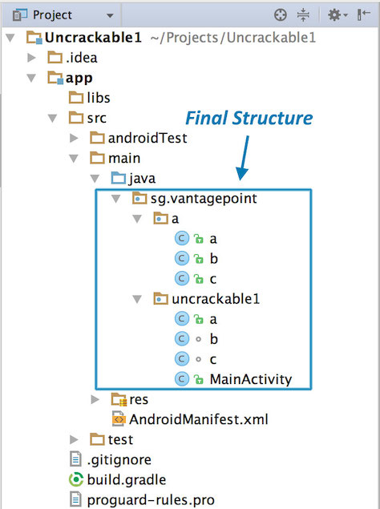
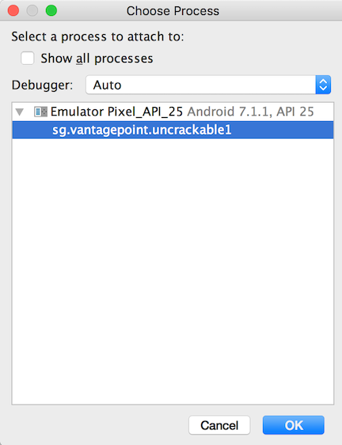
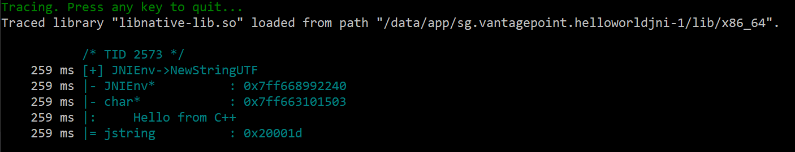

Android Tampering and Reverse Engineering¶
Android's openness makes it a favorable environment for reverse engineers. In the following chapter, we'll look at some peculiarities of Android reversing and OS-specific tools as processes.
Android offers reverse engineers big advantages that are not available with iOS. Because Android is open-source, you can study its source code at the Android Open Source Project (AOSP) and modify the OS and its standard tools any way you want. Even on standard retail devices, it is possible to do things like activating developer mode and sideloading apps without jumping through many hoops. From the powerful tools shipping with the SDK to the wide range of available reverse engineering tools, there's a lot of niceties to make your life easier.
However, there are also a few Android-specific challenges. For example, you'll need to deal with both Java bytecode and native code. Java Native Interface (JNI) is sometimes deliberately used to confuse reverse engineers (to be fair, there are legitimate reasons for using JNI, such as improving performance or supporting legacy code). Developers sometimes use the native layer to "hide" data and functionality, and they may structure their apps such that execution frequently jumps between the two layers.
You'll need at least a working knowledge of both the Java-based Android environment and the Linux OS and Kernel, on which Android is based. You'll also need the right toolset to deal with both the bytecode running on the Java virtual machine and the native code.
Note that we'll use the OWASP Mobile Testing Guide Crackmes as examples for demonstrating various reverse engineering techniques in the following sections, so expect partial and full spoilers. We encourage you to have a crack at the challenges yourself before reading on!
Reverse Engineering¶
Reverse engineering is the process of taking an app apart to find out how it works. You can do this by examining the compiled app (static analysis), observing the app during runtime (dynamic analysis), or a combination of both.
Disassembling and Decompiling¶
In Android app security testing, if the application is based solely on Java and doesn't have any native code (C/C++ code), the reverse engineering process is relatively easy and recovers (decompiles) almost all the source code. In those cases, black-box testing (with access to the compiled binary, but not the original source code) can get pretty close to white-box testing.
Nevertheless, if the code has been purposefully obfuscated (or some tool-breaking anti-decompilation tricks have been applied), the reverse engineering process may be very time-consuming and unproductive. This also applies to applications that contain native code. They can still be reverse engineered, but the process is not automated and requires knowledge of low-level details.
Decompiling Java Code¶
If you don't mind looking at Smali instead of Java, you can simply open your APK in Android Studio by clicking Profile or debug APK from the Welcome screen (even if you don't intend to debug it you can take a look at the smali code).
Alternatively you can use apktool to extract and disassemble resources directly from the APK archive and disassemble Java bytecode to Smali. apktool allows you to reassemble the package, which is useful for patching and applying changes to e.g. the Android Manifest.
If you want to look directly into Java source code on a GUI, simply open your APK using jadx or Bytecode Viewer.
Android decompilers go one step further and attempt to convert Android bytecode back into Java source code, making it more human-readable. Fortunately, Java decompilers generally handle Android bytecode well. The above mentioned tools embed, and sometimes even combine, popular free decompilers such as:
Alternatively run apkx on your APK or use the exported files from the previous tools to open the Java source code in another tool such as an IDE.
In the following example we'll be using UnCrackable App for Android Level 1. First, let's install the app on a device or emulator and run it to see what the crackme is about.
Seems like we're expected to find some kind of secret code!
We're looking for a secret string stored somewhere inside the app, so the next step is to look inside. First, unzip the APK file (unzip UnCrackable-Level1.apk -d UnCrackable-Level1) and look at the content. In the standard setup, all the Java bytecode and app data is in the file classes.dex in the app root directory (UnCrackable-Level1/). This file conforms to the Dalvik Executable Format (DEX), an Android-specific way of packaging Java programs. Most Java decompilers take plain class files or JARs as input, so you need to convert the classes.dex file into a JAR first. You can do this with dex2jar or enjarify.
Once you have a JAR file, you can use any free decompiler to produce Java code. In this example, we'll use the CFR decompiler. CFR is under active development, and brand-new releases are available on the author's website. CFR was released under an MIT license, so you can use it freely even though its source code is not available.
The easiest way to run CFR is through apkx, which also packages dex2jar and automates extraction, conversion, and decompilation. Run it on the APK and you should find the decompiled sources in the directory Uncrackable-Level1/src. To view the sources, a simple text editor (preferably with syntax highlighting) is fine, but loading the code into a Java IDE makes navigation easier. Let's import the code into IntelliJ, which also provides on-device debugging functionality.
Open IntelliJ and select "Android" as the project type in the left tab of the "New Project" dialog. Enter "Uncrackable1" as the application name and "vantagepoint.sg" as the company name. This results in the package name "sg.vantagepoint.uncrackable1", which matches the original package name. Using a matching package name is important if you want to attach the debugger to the running app later on because IntelliJ uses the package name to identify the correct process.

In the next dialog, pick any API number; you don't actually want to compile the project, so the number doesn't matter. Click "next" and choose "Add no Activity", then click "finish".
Once you have created the project, expand the "1: Project" view on the left and navigate to the folder app/src/main/java. Right-click and delete the default package "sg.vantagepoint.uncrackable1" created by IntelliJ.

Now, open the Uncrackable-Level1/src directory in a file browser and drag the sg directory into the now empty Java folder in the IntelliJ project view (hold the "alt" key to copy the folder instead of moving it).

You'll end up with a structure that resembles the original Android Studio project from which the app was built.

See the section "Reviewing Decompiled Java Code" below to learn on how to proceed when inspecting the decompiled Java code.
Disassembling Native Code¶
Dalvik and ART both support the Java Native Interface (JNI), which defines a way for Java code to interact with native code written in C/C++. As on other Linux-based operating systems, native code is packaged (compiled) into ELF dynamic libraries (*.so), which the Android app loads at runtime via the System.load method. However, instead of relying on widely used C libraries (such as glibc), Android binaries are built against a custom libc named Bionic. Bionic adds support for important Android-specific services such as system properties and logging, and it is not fully POSIX-compatible.
When reversing an Android application containing native code, we need to understand a couple of data structures related to the JNI bridge between Java and native code. From the reversing perspective, we need to be aware of two key data structures: JavaVM and JNIEnv. Both of them are pointers to pointers to function tables:
JavaVMprovides an interface to invoke functions for creating and destroying a JavaVM. Android allows only oneJavaVMper process and is not really relevant for our reversing purposes.JNIEnvprovides access to most of the JNI functions which are accessible at a fixed offset through theJNIEnvpointer. ThisJNIEnvpointer is the first parameter passed to every JNI function. We will discuss this concept again with the help of an example later in this chapter.
It is worth highlighting that analyzing disassembled native code is much more challenging than disassembled Java code. When reversing the native code in an Android application we will need a disassembler.
In the next example we'll reverse the HelloWorld-JNI.apk from the OWASP MSTG repository. Installing and running it in an emulator or Android device is optional.
$ wget https://github.com/OWASP/owasp-mstg/raw/master/Samples/Android/01_HelloWorld-JNI/HelloWord-JNI.apk
This app is not exactly spectacular, all it does is show a label with the text "Hello from C++". This is the app Android generates by default when you create a new project with C/C++ support, which is just enough to show the basic principles of JNI calls.
Decompile the APK with apkx.
$ apkx HelloWord-JNI.apk
Extracting HelloWord-JNI.apk to HelloWord-JNI
Converting: classes.dex -> classes.jar (dex2jar)
dex2jar HelloWord-JNI/classes.dex -> HelloWord-JNI/classes.jar
Decompiling to HelloWord-JNI/src (cfr)
This extracts the source code into the HelloWord-JNI/src directory. The main activity is found in the file HelloWord-JNI/src/sg/vantagepoint/helloworldjni/MainActivity.java. The "Hello World" text view is populated in the onCreate method:
public class MainActivity
extends AppCompatActivity {
static {
System.loadLibrary("native-lib");
}
@Override
protected void onCreate(Bundle bundle) {
super.onCreate(bundle);
this.setContentView(2130968603);
((TextView)this.findViewById(2131427422)).setText((CharSequence)this. \
stringFromJNI());
}
public native String stringFromJNI();
}
Note the declaration of public native String stringFromJNI at the bottom. The keyword "native" tells the Java compiler that this method is implemented in a native language. The corresponding function is resolved during runtime, but only if a native library that exports a global symbol with the expected signature is loaded (signatures comprise a package name, class name, and method name). In this example, this requirement is satisfied by the following C or C++ function:
JNIEXPORT jstring JNICALL Java_sg_vantagepoint_helloworld_MainActivity_stringFromJNI(JNIEnv *env, jobject)
So where is the native implementation of this function? If you look into the "lib" directory of the unzipped APK archive, you'll see several subdirectories (one per supported processor architecture), each of them containing a version of the native library, in this case libnative-lib.so. When System.loadLibrary is called, the loader selects the correct version based on the device that the app is running on. Before moving ahead, pay attention to the first parameter passed to the current JNI function. It is the same JNIEnv data structure which was discussed earlier in this section.
Following the naming convention mentioned above, you can expect the library to export a symbol called Java_sg_vantagepoint_helloworld_MainActivity_stringFromJNI. On Linux systems, you can retrieve the list of symbols with readelf (included in GNU binutils) or nm. Do this on macOS with the greadelf tool, which you can install via Macports or Homebrew. The following example uses greadelf:
$ greadelf -W -s libnative-lib.so | grep Java
3: 00004e49 112 FUNC GLOBAL DEFAULT 11 Java_sg_vantagepoint_helloworld_MainActivity_stringFromJNI
You can also see this using radare2's rabin2:
$ rabin2 -s HelloWord-JNI/lib/armeabi-v7a/libnative-lib.so | grep -i Java
003 0x00000e78 0x00000e78 GLOBAL FUNC 16 Java_sg_vantagepoint_helloworldjni_MainActivity_stringFromJNI
This is the native function that eventually gets executed when the stringFromJNI native method is called.
To disassemble the code, you can load libnative-lib.so into any disassembler that understands ELF binaries (i.e., any disassembler). If the app ships with binaries for different architectures, you can theoretically pick the architecture you're most familiar with, as long as it is compatible with the disassembler. Each version is compiled from the same source and implements the same functionality. However, if you're planning to debug the library on a live device later, it's usually wise to pick an ARM build.
To support both older and newer ARM processors, Android apps ship with multiple ARM builds compiled for different Application Binary Interface (ABI) versions. The ABI defines how the application's machine code is supposed to interact with the system at runtime. The following ABIs are supported:
- armeabi: ABI is for ARM-based CPUs that support at least the ARMv5TE instruction set.
- armeabi-v7a: This ABI extends armeabi to include several CPU instruction set extensions.
- arm64-v8a: ABI for ARMv8-based CPUs that support AArch64, the new 64-bit ARM architecture.
Most disassemblers can handle any of those architectures. Below, we'll be viewing the armeabi-v7a version (located in HelloWord-JNI/lib/armeabi-v7a/libnative-lib.so) in radare2 and in IDA Pro. See the section "Reviewing Disassembled Native Code" below to learn on how to proceed when inspecting the disassembled native code.
radare2¶
To open the file in radare2 you only have to run r2 -A HelloWord-JNI/lib/armeabi-v7a/libnative-lib.so. The chapter "Android Basic Security Testing" already introduced radare2. Remember that you can use the flag -A to run the aaa command right after loading the binary in order to analyze all referenced code.
$ r2 -A HelloWord-JNI/lib/armeabi-v7a/libnative-lib.so
[x] Analyze all flags starting with sym. and entry0 (aa)
[x] Analyze function calls (aac)
[x] Analyze len bytes of instructions for references (aar)
[x] Check for objc references
[x] Check for vtables
[x] Finding xrefs in noncode section with anal.in=io.maps
[x] Analyze value pointers (aav)
[x] Value from 0x00000000 to 0x00001dcf (aav)
[x] 0x00000000-0x00001dcf in 0x0-0x1dcf (aav)
[x] Emulate code to find computed references (aae)
[x] Type matching analysis for all functions (aaft)
[x] Use -AA or aaaa to perform additional experimental analysis.
-- Print the contents of the current block with the 'p' command
[0x00000e3c]>
Note that for bigger binaries, starting directly with the flag -A might be very time consuming as well as unnecessary. Depending on your purpose, you may open the binary without this option and then apply a less complex analysis like aa or a more concrete type of analysis such as the ones offered in aa (basic analysis of all functions) or aac (analyze function calls). Remember to always type ? to get the help or attach it to commands to see even more command or options. For example, if you enter aa? you'll get the full list of analysis commands.
[0x00001760]> aa?
Usage: aa[0*?] # see also 'af' and 'afna'
| aa alias for 'af@@ sym.*;af@entry0;afva'
| aaa[?] autoname functions after aa (see afna)
| aab abb across bin.sections.rx
| aac [len] analyze function calls (af @@ `pi len~call[1]`)
| aac* [len] flag function calls without performing a complete analysis
| aad [len] analyze data references to code
| aae [len] ([addr]) analyze references with ESIL (optionally to address)
| aaf[e|t] analyze all functions (e anal.hasnext=1;afr @@c:isq) (aafe=aef@@f)
| aaF [sym*] set anal.in=block for all the spaces between flags matching glob
| aaFa [sym*] same as aaF but uses af/a2f instead of af+/afb+ (slower but more accurate)
| aai[j] show info of all analysis parameters
| aan autoname functions that either start with fcn.* or sym.func.*
| aang find function and symbol names from golang binaries
| aao analyze all objc references
| aap find and analyze function preludes
| aar[?] [len] analyze len bytes of instructions for references
| aas [len] analyze symbols (af @@= `isq~[0]`)
| aaS analyze all flags starting with sym. (af @@ sym.*)
| aat [len] analyze all consecutive functions in section
| aaT [len] analyze code after trap-sleds
| aau [len] list mem areas (larger than len bytes) not covered by functions
| aav [sat] find values referencing a specific section or map
There is a thing that is worth noticing about radare2 vs other disassemblers like e.g. IDA Pro. The following quote from an article of radare2's blog (http://radare.today/) pretty summarizes this.
Code analysis is not a quick operation, and not even predictable or taking a linear time to be processed. This makes starting times pretty heavy, compared to just loading the headers and strings information like it’s done by default.
People that are used to IDA or Hopper just load the binary, go out to make a coffee and then when the analysis is done, they start doing the manual analysis to understand what the program is doing. It’s true that those tools perform the analysis in background, and the GUI is not blocked. But this takes a lot of CPU time, and r2 aims to run in many more platforms than just high-end desktop computers.
This said, please see section "Reviewing Disassembled Native Code" to learn more bout how radare2 can help us performing our reversing tasks much faster. For example, getting the disassembly of an specific function is a trivial task that can be performed in one command.
IDA Pro¶
If you own an IDA Pro license, open the file and once in the "Load new file" dialog, choose "ELF for ARM (Shared Object)" as the file type (IDA should detect this automatically), and "ARM Little-Endian" as the processor type.

The freeware version of IDA Pro unfortunately does not support the ARM processor type.
Static Analysis¶
For white-box source code testing, you'll need a setup similar to the developer's setup, including a test environment that includes the Android SDK and an IDE. Access to either a physical device or an emulator (for debugging the app) is recommended.
During black-box testing, you won't have access to the original form of the source code. You'll usually have the application package in Android's APK format, which can be installed on an Android device or reverse engineered as explained in the section "Disassembling and Decompiling".
Basic Information Gathering¶
As discussed in previous sections, an Android application can consist of both Java/Kotlin bytecode and native code. In this section, we will learn about some approaches and tools for collecting basic information using static analysis.
Retrieving Strings¶
While performing any kind of binary analysis, strings can be considered as one of the most valuable starting points as they provide context. For example, an error log string like "Data encryption failed." gives us a hint that the adjoining code might be responsible for performing some kind of encryption operation.
Java and Kotlin Bytecode¶
As we already know, all the Java and Kotlin bytecode of an Android application is compiled into a DEX file. Each DEX file contains a list of string identifiers (strings_ids), which contains all the string identifiers used in the binary whenever a string is referred, including internal naming (e.g, type descriptors) or constant objects referred by the code (e.g hardcoded strings). You can simply dump this list using tools such as Ghidra (GUI based) or Dextra (CLI based).
With Ghidra, strings can be obtained by simply loading the DEX file and selecting Window -> Defined strings in the menu.
Loading an APK file directly into Ghidra might lead to inconsistencies. Thus it is recommended to extract the DEX file by unzipping the APK file and then loading it into Ghidra.

With Dextra, you can dump all the strings using the following command:
dextra -S classes.dex
The output from Dextra can be manipulated using standard Linux commands, for example, using grep to search for certain keywords.
It is important to know, the list of strings obtained using the above tools can be very big, as it also includes the various class and package names used in the application. Going through the complete list, specially for big binaries, can be very cumbersome. Thus, it is recommended to start with keyword-based searching and go through the list only when keyword search does not help. Some generic keywords which can be a good starting point are - password, key, and secret. Other useful keywords specific to the context of the app can be obtained while you are using the app itself. For instance, imagine that the app has as login form, you can take note of the displayed placeholder or title text of the input fields and use that as an entry point for your static analysis.
Native Code¶
In order to extract strings from native code used in an Android application, you can use GUI tools such as Ghidra or Cutter or rely on CLI-based tools such as the strings Unix utility (strings <path_to_binary>) or radare2's rabin2 (rabin2 -zz <path_to_binary>). When using the CLI-based ones you can take advantage of other tools such as grep (e.g. in conjunction with regular expressions) to further filter and analyze the results.
Cross References¶
Java and Kotlin¶
There are many RE tools that support retrieving Java cross references. For many of the GUI-based ones, this is usually done by right clicking on the desired function and selecting the corresponding option, e.g. Show References to in Ghidra or Find Usage in jadx.
Native Code¶
Similarly to Java analysis, you can also use Ghidra to analyze native libraries and obtain cross references by right clicking the desired function and selecting Show References to.
API Usage¶
The Android platform provides many in-built libraries for frequently used functionalities in applications, for example cryptography, Bluetooth, NFC, network or location libraries. Determining the presence of these libraries in an application can give us valuable information about its nature.
For instance, if an application is importing javax.crypto.Cipher, it indicates that the application will be performing some kind of cryptographic operation. Fortunately, cryptographic calls are very standard in nature, i.e, they need to be called in a particular order to work correctly, this knowledge can be helpful when analyzing cryptography APIs. For example, by looking for the Cipher.getInstance function, we can determine the cryptographic algorithm being used. With such an approach we can directly move to analyzing cryptographic assets, which often are very critical in an application. Further information on how to analyze Android's cryptographic APIs is discussed in the section "Android Cryptographic APIs".
Similarly, the above approach can be used to determine where and how an application is using NFC. For instance, an application using Host-based Card Emulation for performing digital payments must use the android.nfc package. Therefore, a good stating point for NFC API analysis would be to consult the Android Developer Documentation to get some ideas and start searching for critical functions such as processCommandApdu from the android.nfc.cardemulation.HostApduService class.
Network Communication¶
Most of the apps you might encounter connect to remote endpoints. Even before you perform any dynamic analysis (e.g. traffic capture and analysis), you can obtain some initial inputs or entry points by enumerating the domains to which the application is supposed to communicate to.
Typically these domains will be present as strings within the binary of the application. One way to achieve this is by using automated tools such as APKEnum or MobSF. Alternatively, you can grep for the domain names by using regular expressions. For this you can target the app binary directly or reverse engineer it and target the disassembled or decompiled code. The latter option has a clear advantage: it can provide you with context, as you'll be able to see in which context each domain is being used (e.g. class and method). ``
From here on you can use this information to derive more insights which might be of use later during your analysis, e.g. you could match the domains to the pinned certificates or the Network Security Configuration file or perform further reconnaissance on domain names to know more about the target environment. When evaluating an application it is important to check the Network Security Configuration file, as often (less secure) debug configurations might be pushed into final release builds by mistake.
The implementation and verification of secure connections can be an intricate process and there are numerous aspects to consider. For instance, many applications use other protocols apart from HTTP such as XMPP or plain TCP packets, or perform certificate pinning in an attempt to deter MITM attacks but unfortunately having severe logical bugs in its implementation or an inherently wrong security network configuration.
Remember that in most of the cases, just using static analysis will not be enough and might even turn to be extremely inefficient when compared to the dynamic alternatives which will get much more reliable results (e.g. using an interceptor proxy). In this section we've just slightly touched the surface, please refer to the section "Basic Network Monitoring/Sniffing" in the "Android Basic Security Testing" chapter and also check the test cases in the chapter "Android Network APIs".
Manual (Reversed) Code Review¶
Reviewing Decompiled Java Code¶
Following the example from "Decompiling Java Code", we assume that you've successfully decompiled and opened the crackme app in IntelliJ. As soon as IntelliJ has indexed the code, you can browse it just like you'd browse any other Java project. Note that many of the decompiled packages, classes, and methods have weird one-letter names; this is because the bytecode has been "minified" with ProGuard at build time. This is a basic type of obfuscation that makes the bytecode a little more difficult to read, but with a fairly simple app like this one, it won't cause you much of a headache. When you're analyzing a more complex app, however, it can get quite annoying.
When analyzing obfuscated code, annotating class names, method names, and other identifiers as you go along is a good practice. Open the MainActivity class in the package sg.vantagepoint.uncrackable1. The method verify is called when you tap the "verify" button. This method passes the user input to a static method called a.a, which returns a boolean value. It seems plausible that a.a verifies user input, so we'll refactor the code to reflect this.
Right-click the class name (the first a in a.a) and select Refactor -> Rename from the drop-down menu (or press Shift-F6). Change the class name to something that makes more sense given what you know about the class so far. For example, you could call it "Validator" (you can always revise the name later). a.a now becomes Validator.a. Follow the same procedure to rename the static method a to check_input.

Congratulations, you just learned the fundamentals of static analysis! It is all about theorizing, annotating, and gradually revising theories about the analyzed program until you understand it completely or, at least, well enough for whatever you want to achieve.
Next, Ctrl+click (or Command+click on Mac) on the check_input method. This takes you to the method definition. The decompiled method looks like this:
public static boolean check_input(String string) {
byte[] arrby = Base64.decode((String) \
"5UJiFctbmgbDoLXmpL12mkno8HT4Lv8dlat8FxR2GOc=", (int)0);
byte[] arrby2 = new byte[]{};
try {
arrby = sg.vantagepoint.a.a.a(Validator.b("8d127684cbc37c17616d806cf50473cc"), arrby);
arrby2 = arrby;
}sa
catch (Exception exception) {
Log.d((String)"CodeCheck", (String)("AES error:" + exception.getMessage()));
}
if (string.equals(new String(arrby2))) {
return true;
}
return false;
}
So, you have a Base64-encoded String that's passed to the function a in the package \
sg.vantagepoint.a.a (again, everything is called a) along with something that looks suspiciously like a hex-encoded encryption key (16 hex bytes = 128bit, a common key length). What exactly does this particular a do? Ctrl-click it to find out.
public class a {
public static byte[] a(byte[] object, byte[] arrby) {
object = new SecretKeySpec((byte[])object, "AES/ECB/PKCS7Padding");
Cipher cipher = Cipher.getInstance("AES");
cipher.init(2, (Key)object);
return cipher.doFinal(arrby);
}
}
Now you're getting somewhere: it's simply standard AES-ECB. Looks like the Base64 string stored in arrby1 in check_input is a ciphertext. It is decrypted with 128bit AES, then compared with the user input. As a bonus task, try to decrypt the extracted ciphertext and find the secret value!
A faster way to get the decrypted string is to add dynamic analysis. We'll revisit UnCrackable App for Android Level 1 later to show how (e.g. in the Debugging section), so don't delete the project yet!
Reviewing Disassembled Native Code¶
Following the example from "Disassembling Native Code" we will use different disassemblers to review the disassembled native code.
radare2¶
Once you've opened your file in radare2 you should first get the address of the function you're looking for. You can do this by listing or getting information i about the symbols s (is) and grepping (~ radare2's built-in grep) for some keyword, in our case we're looking for JNI related symbols so we enter "Java":
$ r2 -A HelloWord-JNI/lib/armeabi-v7a/libnative-lib.so
...
[0x00000e3c]> is~Java
003 0x00000e78 0x00000e78 GLOBAL FUNC 16 Java_sg_vantagepoint_helloworldjni_MainActivity_stringFromJNI
The method can be found at address 0x00000e78. To display its disassembly simply run the following commands:
[0x00000e3c]> e emu.str=true;
[0x00000e3c]> s 0x00000e78
[0x00000e78]> af
[0x00000e78]> pdf
╭ (fcn) sym.Java_sg_vantagepoint_helloworldjni_MainActivity_stringFromJNI 12
│ sym.Java_sg_vantagepoint_helloworldjni_MainActivity_stringFromJNI (int32_t arg1);
│ ; arg int32_t arg1 @ r0
│ 0x00000e78 ~ 0268 ldr r2, [r0] ; arg1
│ ;-- aav.0x00000e79:
│ ; UNKNOWN XREF from aav.0x00000189 (+0x3)
│ 0x00000e79 unaligned
│ 0x00000e7a 0249 ldr r1, aav.0x00000f3c ; [0xe84:4]=0xf3c aav.0x00000f3c
│ 0x00000e7c d2f89c22 ldr.w r2, [r2, 0x29c]
│ 0x00000e80 7944 add r1, pc ; "Hello from C++" section..rodata
╰ 0x00000e82 1047 bx r2
Let's explain the previous commands:
e emu.str=true;enables radare2's string emulation. Thanks to this, we can see the string we're looking for ("Hello from C++").s 0x00000e78is a seek to the addresss 0x00000e78, where our target function is located. We do this so that the following commands apply to this address.pdfmeans print disassembly of function.
Using radare2 you can quickly run commands and exit by using the flags -qc '<commands>'. From the previous steps we know already what to do so we will simply put everything together:
$ r2 -qc 'e emu.str=true; s 0x00000e78; af; pdf' HelloWord-JNI/lib/armeabi-v7a/libnative-lib.so
╭ (fcn) sym.Java_sg_vantagepoint_helloworldjni_MainActivity_stringFromJNI 12
│ sym.Java_sg_vantagepoint_helloworldjni_MainActivity_stringFromJNI (int32_t arg1);
│ ; arg int32_t arg1 @ r0
│ 0x00000e78 0268 ldr r2, [r0] ; arg1
│ 0x00000e7a 0249 ldr r1, [0x00000e84] ; [0xe84:4]=0xf3c
│ 0x00000e7c d2f89c22 ldr.w r2, [r2, 0x29c]
│ 0x00000e80 7944 add r1, pc ; "Hello from C++" section..rodata
╰ 0x00000e82 1047 bx r2
Notice that in this case we're not starting with the -A flag not running aaa. Instead, we just tell radare2 to analyze that one function by using the analyze function af command. This is one of those cases where we can speed up our workflow because you're focusing on some specific part of an app.
The workflow can be further improved by using r2ghidra-dec, a deep integration of Ghidra decompiler for radare2. r2ghidra-dec generates decompiled C code, which can aid in quickly analyzing the binary.
IDA Pro¶
We assume that you've successfully opened lib/armeabi-v7a/libnative-lib.so in IDA pro. Once the file is loaded, click into the "Functions" window on the left and press Alt+t to open the search dialog. Enter "java" and hit enter. This should highlight the Java_sg_vantagepoint_helloworld_ MainActivity_stringFromJNI function. Double-click the function to jump to its address in the disassembly Window. "Ida View-A" should now show the disassembly of the function.

Not a lot of code there, but you should analyze it. The first thing you need to know is that the first argument passed to every JNI function is a JNI interface pointer. An interface pointer is a pointer to a pointer. This pointer points to a function table: an array of even more pointers, each of which points to a JNI interface function (is your head spinning yet?). The function table is initialized by the Java VM and allows the native function to interact with the Java environment.

With that in mind, let's have a look at each line of assembly code.
LDR R2, [R0]
Remember: the first argument (in R0) is a pointer to the JNI function table pointer. The LDR instruction loads this function table pointer into R2.
LDR R1, =aHelloFromC
This instruction loads into R1 the PC-relative offset of the string "Hello from C++". Note that this string comes directly after the end of the function block at offset 0xe84. Addressing relative to the program counter allows the code to run independently of its position in memory.
LDR.W R2, [R2, #0x29C]
This instruction loads the function pointer from offset 0x29C into the JNI function pointer table pointed to by R2. This is the NewStringUTF function. You can look at the list of function pointers in jni.h, which is included in the Android NDK. The function prototype looks like this:
jstring (*NewStringUTF)(JNIEnv*, const char*);
The function takes two arguments: the JNIEnv pointer (already in R0) and a String pointer. Next, the current value of PC is added to R1, resulting in the absolute address of the static string "Hello from C++" (PC + offset).
ADD R1, PC
Finally, the program executes a branch instruction to the NewStringUTF function pointer loaded into R2:
BX R2
When this function returns, R0 contains a pointer to the newly constructed UTF string. This is the final return value, so R0 is left unchanged and the function returns.
Ghidra¶
After opening the library in Ghidra we can see all the functions defined in the Symbol Tree panel under Functions. The native library for the current application is relatively very small. There are three user defined functions: FUN_001004d0, FUN_0010051c, and Java_sg_vantagepoint_helloworldjni_MainActivity_stringFromJNI. The other symbols are not user defined and are generated for proper functioning of the shared library. The instructions in the function Java_sg_vantagepoint_helloworldjni_MainActivity_stringFromJNI are already discussed in detail in previous sections. In this section we can look into the decompilation of the function.
Inside the current function there is a call to another function, whose address is obtained by accessing an offset in the JNIEnv pointer (found as plParm1). This logic has been diagrammatically demonstrated above as well. The corresponding C code for the disassembled function is shown in the Decompiler window. This decompiled C code makes it much easier to understand the function call being made. Since this function is small and extremely simple, the decompilation output is very accurate, this can change drastically when dealing with complex functions.
Automated Static Analysis¶
You should use tools for efficient static analysis. They allow the tester to focus on the more complicated business logic. A plethora of static code analyzers are available, ranging from open source scanners to full-blown enterprise-ready scanners. The best tool for the job depends on budget, client requirements, and the tester's preferences.
Some static analyzers rely on the availability of the source code; others take the compiled APK as input. Keep in mind that static analyzers may not be able to find all problems by themselves even though they can help us focus on potential problems. Review each finding carefully and try to understand what the app is doing to improve your chances of finding vulnerabilities.
Configure the static analyzer properly to reduce the likelihood of false positives and maybe only select several vulnerability categories in the scan. The results generated by static analyzers can otherwise be overwhelming, and your efforts can be counterproductive if you must manually investigate a large report.
There are several open source tools for automated security analysis of an APK.
Dynamic Analysis¶
Dynamic Analysis tests the mobile app by executing and running the app binary and analyzing its workflows for vulnerabilities. For example, vulnerabilities regarding data storage might be sometimes hard to catch during static analysis, but in dynamic analysis you can easily spot what information is stored persistently and if the information is protected properly. Besides this, dynamic analysis allows the tester to properly identify:
- Business logic flaws
- Vulnerabilities in the tested environments
- Weak input validation and bad input/output encoding as they are processed through one or multiple services
Analysis can be assisted by automated tools, such as MobSF, while assessing an application. An application can be assessed by side-loading it, re-packaging it, or by simply attacking the installed version.
Dynamic Analysis on Non-Rooted Devices¶
Non-rooted devices provide the tester with two benefits:
- Replicate an environment that the application is intended to run on.
- Thanks to tools like objection, you can patch the app in order to test it like if you were on a rooted device (but of course being jailed to that one app).
In order to dynamically analyze the application, you can also rely on objection which is leveraging Frida. However, in order to be able to use objection on non-rooted devices you have to perform one additional step: patch the APK to include the Frida gadget library. Objection communicates then using a Python API with the mobile phone through the installed Frida gadget.
In order to accomplish this, the following commands can set you up and running:
# Download the Uncrackable APK
$ wget https://raw.githubusercontent.com/OWASP/owasp-mstg/master/Crackmes/Android/Level_01/UnCrackable-Level1.apk
# Patch the APK with the Frida Gadget
$ objection patchapk --source UnCrackable-Level1.apk
# Install the patched APK on the android phone
$ adb install UnCrackable-Level1.objection.apk
# After running the mobile phone, objection will detect the running frida-server through the APK
$ objection explore
Basic Information Gathering¶
As mentioned previously, Android runs on top of a modified Linux kernel and retains the proc filesystem (procfs) from Linux, which is mounted at /proc. Procfs provides a directory-based view of a process running on the system, providing detailed information about the process itself, its threads, and other system-wide diagnostics. Procfs is arguably one of the most important filesystems on Android, where many OS native tools depend on it as their source of information.
Many command line tools are not shipped with the Android firmware to reduce the size, but can be easily installed on a rooted device using BusyBox. We can also create our own custom scripts using commands like cut, grep, sort etc, to parse the proc filesystem information.
In this section, we will be using information from procfs directly or indirectly to gather information about a running process.
Open Files¶
You can use lsof with the flag -p <pid> to return the list of open files for the specified process. See the man page for more options.
# lsof -p 6233
COMMAND PID USER FD TYPE DEVICE SIZE/OFF NODE NAME
.foobar.c 6233 u0_a97 cwd DIR 0,1 0 1 /
.foobar.c 6233 u0_a97 rtd DIR 0,1 0 1 /
.foobar.c 6233 u0_a97 txt REG 259,11 23968 399 /system/bin/app_process64
.foobar.c 6233 u0_a97 mem unknown /dev/ashmem/dalvik-main space (region space) (deleted)
.foobar.c 6233 u0_a97 mem REG 253,0 2797568 1146914 /data/dalvik-cache/arm64/system@framework@boot.art
.foobar.c 6233 u0_a97 mem REG 253,0 1081344 1146915 /data/dalvik-cache/arm64/system@framework@boot-core-libart.art
...
In the above output, the most relevant fields for us are:
NAME: path of the file.TYPE: type of the file, for example, file is a directory or a regular file.
This can be extremely useful to spot unusual files when monitoring applications using obfuscation or other anti-reverse engineering techniques, without having to reverse the code. For instance, an application might be performing encryption-decryption of data and storing it in a file temporarily.
Open Connections¶
You can find system-wide networking information in /proc/net or just by inspecting the /proc/<pid>/net directories (for some reason not process specific). There are multiple files present in these directories, of which tcp, tcp6 and udp might be considered relevant from the tester's perspective.
# cat /proc/7254/net/tcp
sl local_address rem_address st tx_queue rx_queue tr tm->when retrnsmt uid timeout inode
...
69: 1101A8C0:BB2F 9A447D4A:01BB 01 00000000:00000000 00:00000000 00000000 10093 0 75412 1 0000000000000000 20 3 19 10 -1
70: 1101A8C0:917C E3CB3AD8:01BB 01 00000000:00000000 00:00000000 00000000 10093 0 75553 1 0000000000000000 20 3 23 10 -1
71: 1101A8C0:C1E3 9C187D4A:01BB 01 00000000:00000000 00:00000000 00000000 10093 0 75458 1 0000000000000000 20 3 19 10 -1
...
In the output above, the most relevant fields for us are:
rem_address: remote address and port number pair (in hexadecimal representation).tx_queueandrx_queue: the outgoing and incoming data queue in terms of kernel memory usage. These fields give an indication how actively the connection is being used.uid: containing the effective UID of the creator of the socket.
Another alternative is to use the netstat command, which also provides information about the network activity for the complete system in a more readable format, and can be easily filtered as per our requirements. For instance, we can easily filter it by PID:
# netstat -p | grep 24685
Active Internet connections (w/o servers)
Proto Recv-Q Send-Q Local Address Foreign Address State PID/Program Name
tcp 0 0 192.168.1.17:47368 172.217.194.103:https CLOSE_WAIT 24685/com.google.android.youtube
tcp 0 0 192.168.1.17:47233 172.217.194.94:https CLOSE_WAIT 24685/com.google.android.youtube
tcp 0 0 192.168.1.17:38480 sc-in-f100.1e100.:https ESTABLISHED 24685/com.google.android.youtube
tcp 0 0 192.168.1.17:44833 74.125.24.91:https ESTABLISHED 24685/com.google.android.youtube
tcp 0 0 192.168.1.17:38481 sc-in-f100.1e100.:https ESTABLISHED 24685/com.google.android.youtube
...
netstat output is clearly more user friendly than reading /proc/<pid>/net. The most relevant fields for us, similar to the previous output, are following:
Foreign Address: remote address and port number pair (port number can be replaced with the well-known name of a protocol associated with the port).Recv-QandSend-Q: Statistics related to receive and send queue. Gives an indication on how actively the connection is being used.State: the state of a socket, for example, if the socket is in active use (ESTABLISHED) or closed (CLOSED).
Loaded Native Libraries¶
The file /proc/<pid>/maps contains the currently mapped memory regions and their access permissions. Using this file we can get the list of the libraries loaded in the process.
# cat /proc/9568/maps
12c00000-52c00000 rw-p 00000000 00:04 14917 /dev/ashmem/dalvik-main space (region space) (deleted)
6f019000-6f2c0000 rw-p 00000000 fd:00 1146914 /data/dalvik-cache/arm64/system@framework@boot.art
...
7327670000-7329747000 r--p 00000000 fd:00 1884627 /data/app/com.google.android.gms-4FJbDh-oZv-5bCw39jkIMQ==/oat/arm64/base.odex
..
733494d000-7334cfb000 r-xp 00000000 fd:00 1884542 /data/app/com.google.android.youtube-Rl_hl9LptFQf3Vf-JJReGw==/lib/arm64/libcronet.80.0.3970.3.so
...
Sandbox Inspection¶
The application data is stored in a sandboxed directory present at /data/data/<app_package_name>. The content of this directory has already been discussed in detail in the "Accessing App Data Directories" section.
Debugging¶
So far, you've been using static analysis techniques without running the target apps. In the real world, especially when reversing malware or more complex apps, pure static analysis is very difficult. Observing and manipulating an app during runtime makes it much, much easier to decipher its behavior. Next, we'll have a look at dynamic analysis methods that help you do just that.
Android apps support two different types of debugging: Debugging on the level of the Java runtime with the Java Debug Wire Protocol (JDWP), and Linux/Unix-style ptrace-based debugging on the native layer, both of which are valuable to reverse engineers.
Debugging Release Apps¶
Dalvik and ART support the JDWP, a protocol for communication between the debugger and the Java virtual machine (VM) that it debugs. JDWP is a standard debugging protocol that's supported by all command line tools and Java IDEs, including jdb, JEB, IntelliJ, and Eclipse. Android's implementation of JDWP also includes hooks for supporting extra features implemented by the Dalvik Debug Monitor Server (DDMS).
A JDWP debugger allows you to step through Java code, set breakpoints on Java methods, and inspect and modify local and instance variables. You'll use a JDWP debugger most of the time you debug "normal" Android apps (i.e., apps that don't make many calls to native libraries).
In the following section, we'll show how to solve the UnCrackable App for Android Level 1 with jdb alone. Note that this is not an efficient way to solve this crackme. Actually you can do it much faster with Frida and other methods, which we'll introduce later in the guide. This, however, serves as an introduction to the capabilities of the Java debugger.
Debugging with jdb¶
The adb command line tool was introduced in the "Android Basic Security Testing" chapter. You can use its adb jdwp command to list the process IDs of all debuggable processes running on the connected device (i.e., processes hosting a JDWP transport). With the adb forward command, you can open a listening socket on your host computer and forward this socket's incoming TCP connections to the JDWP transport of a chosen process.
$ adb jdwp
12167
$ adb forward tcp:7777 jdwp:12167
You're now ready to attach jdb. Attaching the debugger, however, causes the app to resume, which you don't want. You want to keep it suspended so that you can explore first. To prevent the process from resuming, pipe the suspend command into jdb:
$ { echo "suspend"; cat; } | jdb -attach localhost:7777
Initializing jdb ...
> All threads suspended.
>
You're now attached to the suspended process and ready to go ahead with the jdb commands. Entering ? prints the complete list of commands. Unfortunately, the Android VM doesn't support all available JDWP features. For example, the redefine command, which would let you redefine a class' code is not supported. Another important restriction is that line breakpoints won't work because the release bytecode doesn't contain line information. Method breakpoints do work, however. Useful working commands include:
- classes: list all loaded classes
- class/methods/fields class id: Print details about a class and list its methods and fields
- locals: print local variables in current stack frame
- print/dump expr: print information about an object
- stop in method: set a method breakpoint
- clear method: remove a method breakpoint
- set lvalue = expr: assign new value to field/variable/array element
Let's revisit the decompiled code from the UnCrackable App for Android Level 1 and think about possible solutions. A good approach would be suspending the app in a state where the secret string is held in a variable in plain text so you can retrieve it. Unfortunately, you won't get that far unless you deal with the root/tampering detection first.
Review the code and you'll see that the method sg.vantagepoint.uncrackable1.MainActivity.a displays the "This in unacceptable..." message box. This method creates an AlertDialog and sets a listener class for the onClick event. This class (named b) has a callback method will terminates the app once the user taps the OK button. To prevent the user from simply canceling the dialog, the setCancelable method is called.
private void a(final String title) {
final AlertDialog create = new AlertDialog$Builder((Context)this).create();
create.setTitle((CharSequence)title);
create.setMessage((CharSequence)"This in unacceptable. The app is now going to exit.");
create.setButton(-3, (CharSequence)"OK", (DialogInterface$OnClickListener)new b(this));
create.setCancelable(false);
create.show();
}
You can bypass this with a little runtime tampering. With the app still suspended, set a method breakpoint on android.app.Dialog.setCancelable and resume the app.
> stop in android.app.Dialog.setCancelable
Set breakpoint android.app.Dialog.setCancelable
> resume
All threads resumed.
>
Breakpoint hit: "thread=main", android.app.Dialog.setCancelable(), line=1,110 bci=0
main[1]
The app is now suspended at the first instruction of the setCancelable method. You can print the arguments passed to setCancelable with the locals command (the arguments are shown incorrectly under "local variables").
main[1] locals
Method arguments:
Local variables:
flag = true
setCancelable(true) was called, so this can't be the call we're looking for. Resume the process with the resume command.
main[1] resume
Breakpoint hit: "thread=main", android.app.Dialog.setCancelable(), line=1,110 bci=0
main[1] locals
flag = false
You've now reached a call to setCancelable with the argument false. Set the variable to true with the set command and resume.
main[1] set flag = true
flag = true = true
main[1] resume
Repeat this process, setting flag to true each time the breakpoint is reached, until the alert box is finally displayed (the breakpoint will be reached five or six times). The alert box should now be cancelable! Tap the screen next to the box and it will close without terminating the app.
Now that the anti-tampering is out of the way, you're ready to extract the secret string! In the "static analysis" section, you saw that the string is decrypted with AES, then compared with the string input to the message box. The method equals of the java.lang.String class compares the string input with the secret string. Set a method breakpoint on java.lang.String.equals, enter an arbitrary text string in the edit field, and tap the "verify" button. Once the breakpoint is reached, you can read the method argument with the locals command.
> stop in java.lang.String.equals
Set breakpoint java.lang.String.equals
>
Breakpoint hit: "thread=main", java.lang.String.equals(), line=639 bci=2
main[1] locals
Method arguments:
Local variables:
other = "radiusGravity"
main[1] cont
Breakpoint hit: "thread=main", java.lang.String.equals(), line=639 bci=2
main[1] locals
Method arguments:
Local variables:
other = "I want to believe"
main[1] cont
This is the plaintext string you're looking for!
Debugging with an IDE¶
Setting up a project in an IDE with the decompiled sources is a neat trick that allows you to set method breakpoints directly in the source code. In most cases, you should be able single-step through the app and inspect the state of variables with the GUI. The experience won't be perfect, it's not the original source code after all, so you won't be able to set line breakpoints and things will sometimes simply not work correctly. Then again, reversing code is never easy, and efficiently navigating and debugging plain old Java code is a pretty convenient way of doing it. A similar method has been described in the NetSPI blog.
To set up IDE debugging, first create your Android project in IntelliJ and copy the decompiled Java sources into the source folder as described above in the "Reviewing Decompiled Java Code" section. On the device, choose the app as debug app on the "Developer options" (Uncrackable1 in this tutorial), and make sure you've switched on the "Wait For Debugger" feature.
Once you tap the Uncrackable app icon from the launcher, it will be suspended in "Wait For Debugger" mode.

Now you can set breakpoints and attach to the Uncrackable1 app process with the "Attach Debugger" toolbar button.
Note that only method breakpoints work when debugging an app from decompiled sources. Once a method breakpoint is reached, you'll get the chance to single step during the method execution.

After you choose the Uncrackable1 application from the list, the debugger will attach to the app process and you'll reach the breakpoint that was set on the onCreate method. Uncrackable1 app triggers anti-debugging and anti-tampering controls within the onCreate method. That's why setting a breakpoint on the onCreate method just before the anti-tampering and anti-debugging checks are performed is a good idea.
Next, single-step through the onCreate method by clicking "Force Step Into" in Debugger view. The "Force Step Into" option allows you to debug the Android framework functions and core Java classes that are normally ignored by debuggers.

Once you "Force Step Into", the debugger will stop at the beginning of the next method, which is the a method of the class sg.vantagepoint.a.c.

This method searches for the "su" binary within a list of directories (/system/xbin and others). Since you're running the app on a rooted device/emulator, you need to defeat this check by manipulating variables and/or function return values.
You can see the directory names inside the "Variables" window by clicking "Step Over" the Debugger view to step into and through the a method.

Step into the System.getenv method with the "Force Step Into" feature.
After you get the colon-separated directory names, the debugger cursor will return to the beginning of the a method, not to the next executable line. This happens because you're working on the decompiled code instead of the source code. This skipping makes following the code flow crucial to debugging decompiled applications. Otherwise, identifying the next line to be executed would become complicated.
If you don't want to debug core Java and Android classes, you can step out of the function by clicking "Step Out" in the Debugger view. Using "Force Step Into" might be a good idea once you reach the decompiled sources and "Step Out" of the core Java and Android classes. This will help speed up debugging while you keep an eye on the return values of the core class functions.
After the a method gets the directory names, it will search for the su binary within these directories. To defeat this check, step through the detection method and inspect the variable content. Once execution reaches a location where the su binary would be detected, modify one of the variables holding the file name or directory name by pressing F2 or right-clicking and choosing "Set Value".


Once you modify the binary name or the directory name, File.exists should return false.
This defeats the first root detection control of UnCrackable App for Android Level 1. The remaining anti-tampering and anti-debugging controls can be defeated in similar ways so that you can finally reach the secret string verification functionality.


The secret code is verified by the method a of class sg.vantagepoint.uncrackable1.a. Set a breakpoint on method a and "Force Step Into" when you reach the breakpoint. Then, single-step until you reach the call to String.equals. This is where user input is compared with the secret string.

You can see the secret string in the "Variables" view when you reach the String.equals method call.
Debugging Native Code¶
Native code on Android is packed into ELF shared libraries and runs just like any other native Linux program. Consequently, you can debug it with standard tools (including GDB and built-in IDE debuggers such as IDA Pro and JEB) as long as they support the device's processor architecture (most devices are based on ARM chipsets, so this is usually not an issue).
You'll now set up your JNI demo app, HelloWorld-JNI.apk, for debugging. It's the same APK you downloaded in "Statically Analyzing Native Code". Use adb install to install it on your device or on an emulator.
$ adb install HelloWorld-JNI.apk
If you followed the instructions at the beginning of this chapter, you should already have the Android NDK. It contains prebuilt versions of gdbserver for various architectures. Copy the gdbserver binary to your device:
$ adb push $NDK/prebuilt/android-arm/gdbserver/gdbserver /data/local/tmp
The gdbserver --attach command causes gdbserver to attach to the running process and bind to the IP address and port specified in comm, which in this case is a HOST:PORT descriptor. Start HelloWorldJNI on the device, then connect to the device and determine the PID of the HelloWorldJNI process (sg.vantagepoint.helloworldjni). Then switch to the root user and attach gdbserver:
$ adb shell
$ ps | grep helloworld
u0_a164 12690 201 1533400 51692 ffffffff 00000000 S sg.vantagepoint.helloworldjni
$ su
# /data/local/tmp/gdbserver --attach localhost:1234 12690
Attached; pid = 12690
Listening on port 1234
The process is now suspended, and gdbserver is listening for debugging clients on port 1234. With the device connected via USB, you can forward this port to a local port on the host with the abd forward command:
$ adb forward tcp:1234 tcp:1234
You'll now use the prebuilt version of gdb included in the NDK toolchain.
$ $TOOLCHAIN/bin/gdb libnative-lib.so
GNU gdb (GDB) 7.11
(...)
Reading symbols from libnative-lib.so...(no debugging symbols found)...done.
(gdb) target remote :1234
Remote debugging using :1234
0xb6e0f124 in ?? ()
You have successfully attached to the process! The only problem is that you're already too late to debug the JNI function StringFromJNI; it only runs once, at startup. You can solve this problem by activating the "Wait for Debugger" option. Go to Developer Options -> Select debug app and pick HelloWorldJNI, then activate the Wait for debugger switch. Then terminate and re-launch the app. It should be suspended automatically.
Our objective is to set a breakpoint at the first instruction of the native function Java_sg_vantagepoint_helloworldjni_MainActivity_stringFromJNI before resuming the app. Unfortunately, this isn't possible at this point in the execution because libnative-lib.so isn't yet mapped into process memory, it's loaded dynamically during runtime. To get this working, you'll first use jdb to gently change the process into the desired state.
First, resume execution of the Java VM by attaching jdb. You don't want the process to resume immediately though, so pipe the suspend command into jdb:
$ adb jdwp
14342
$ adb forward tcp:7777 jdwp:14342
$ { echo "suspend"; cat; } | jdb -attach localhost:7777
Next, suspend the process where the Java runtime loads libnative-lib.so. In jdb, set a breakpoint at the java.lang.System.loadLibrary method and resume the process. After the breakpoint has been reached, execute the step up command, which will resume the process until loadLibraryreturns. At this point, libnative-lib.so has been loaded.
> stop in java.lang.System.loadLibrary
> resume
All threads resumed.
Breakpoint hit: "thread=main", java.lang.System.loadLibrary(), line=988 bci=0
> step up
main[1] step up
>
Step completed: "thread=main", sg.vantagepoint.helloworldjni.MainActivity.<clinit>(), line=12 bci=5
main[1]
Execute gdbserver to attach to the suspended app. This will cause the app to be suspended by both the Java VM and the Linux kernel (creating a state of "double-suspension").
$ adb forward tcp:1234 tcp:1234
$ $TOOLCHAIN/arm-linux-androideabi-gdb libnative-lib.so
GNU gdb (GDB) 7.7
Copyright (C) 2014 Free Software Foundation, Inc.
(...)
(gdb) target remote :1234
Remote debugging using :1234
0xb6de83b8 in ?? ()
Tracing¶
Execution Tracing¶
Besides being useful for debugging, the jdb command line tool offers basic execution tracing functionality. To trace an app right from the start, you can pause the app with the Android "Wait for Debugger" feature or a kill -STOP command and attach jdb to set a deferred method breakpoint on any initialization method. Once the breakpoint is reached, activate method tracing with the trace go methods command and resume execution. jdb will dump all method entries and exits from that point onwards.
$ adb forward tcp:7777 jdwp:7288
$ { echo "suspend"; cat; } | jdb -attach localhost:7777
Set uncaught java.lang.Throwable
Set deferred uncaught java.lang.Throwable
Initializing jdb ...
> All threads suspended.
> stop in com.acme.bob.mobile.android.core.BobMobileApplication.<clinit>()
Deferring breakpoint com.acme.bob.mobile.android.core.BobMobileApplication.<clinit>().
It will be set after the class is loaded.
> resume
All threads resumed.M
Set deferred breakpoint com.acme.bob.mobile.android.core.BobMobileApplication.<clinit>()
Breakpoint hit: "thread=main", com.acme.bob.mobile.android.core.BobMobileApplication.<clinit>(), line=44 bci=0
main[1] trace go methods
main[1] resume
Method entered: All threads resumed.
The Dalvik Debug Monitor Server (DDMS) is a GUI tool included with Android Studio. It may not look like much, but its Java method tracer is one of the most awesome tools you can have in your arsenal, and it is indispensable for analyzing obfuscated bytecode.
DDMS is somewhat confusing, however; it can be launched several ways, and different trace viewers will be launched depending on how a method was traced. There's a standalone tool called "Traceview" as well as a built-in viewer in Android Studio, both of which offer different ways to navigate the trace. You'll usually use Android studio's built-in viewer, which gives you a zoomable hierarchical timeline of all method calls. However, the standalone tool is also useful, it has a profile panel that shows the time spent in each method along with the parents and children of each method.
To record an execution trace in Android Studio, open the Android tab at the bottom of the GUI. Select the target process in the list and click the little stop watch button on the left. This starts the recording. Once you're done, click the same button to stop the recording. The integrated trace view will open and show the recorded trace. You can scroll and zoom the timeline view with the mouse or trackpad.
Execution traces can also be recorded in the standalone Android Device Monitor. The Device Monitor can be started within Android Studio (Tools -> Android -> Android Device Monitor) or from the shell with the ddms command.
To start recording tracing information, select the target process in the Devices tab and click Start Method Profiling. Click the stop button to stop recording, after which the Traceview tool will open and show the recorded trace. Clicking any of the methods in the profile panel highlights the selected method in the timeline panel.
DDMS also offers a convenient heap dump button that will dump the Java heap of a process to a .hprof file. The Android Studio user guide contains more information about Traceview.
Tracing System Calls¶
Moving down a level in the OS hierarchy, you arrive at privileged functions that require the powers of the Linux kernel. These functions are available to normal processes via the system call interface. Instrumenting and intercepting calls into the kernel is an effective method for getting a rough idea of what a user process is doing, and often the most efficient way to deactivate low-level tampering defenses.
Strace is a standard Linux utility that is not included with Android by default, but can be easily built from source via the Android NDK. It monitors the interaction between processes and the kernel, being a very convenient way to monitor system calls. However, there's a downside: as strace depends on the ptrace system call to attach to the target process, once anti-debugging measures become active it will stop working.
If the "Wait for debugger" feature in Settings > Developer options is unavailable, you can use a shell script to launch the process and immediately attach strace (not an elegant solution, but it works):
$ while true; do pid=$(pgrep 'target_process' | head -1); if [[ -n "$pid" ]]; then strace -s 2000 - e "!read" -ff -p "$pid"; break; fi; done
Ftrace¶
Ftrace is a tracing utility built directly into the Linux kernel. On a rooted device, ftrace can trace kernel system calls more transparently than strace can (strace relies on the ptrace system call to attach to the target process).
Conveniently, the stock Android kernel on both Lollipop and Marshmallow include ftrace functionality. The feature can be enabled with the following command:
$ echo 1 > /proc/sys/kernel/ftrace_enabled
The /sys/kernel/debug/tracing directory holds all control and output files related to ftrace. The following files are found in this directory:
- available_tracers: This file lists the available tracers compiled into the kernel.
- current_tracer: This file sets or displays the current tracer.
- tracing_on: Echo "1" into this file to allow/start update of the ring buffer. Echoing "0" will prevent further writes into the ring buffer.
KProbes¶
The KProbes interface provides an even more powerful way to instrument the kernel: it allows you to insert probes into (almost) arbitrary code addresses within kernel memory. KProbes inserts a breakpoint instruction at the specified address. Once the breakpoint is reached, control passes to the KProbes system, which then executes the user-defined handler function(s) and the original instruction. Besides being great for function tracing, KProbes can implement rootkit-like functionality, such as file hiding.
Jprobes and Kretprobes are other KProbes-based probe types that allow hooking of function entries and exits.
The stock Android kernel comes without loadable module support, which is a problem because Kprobes are usually deployed as kernel modules. The strict memory protection the Android kernel is compiled with is another issue because it prevents the patching of some parts of Kernel memory. Elfmaster's system call hooking method causes a Kernel panic on stock Lollipop and Marshmallow because the sys_call_table is non-writable. You can, however, use KProbes in a sandbox by compiling your own, more lenient Kernel (more on this later).
Method Tracing¶
In contrast to method profiling, which tells you how frequently a method is being called, method tracing helps you to also determine its input and output values. This technique can prove to be very useful when dealing with applications that have a big codebase and/or are obfuscated.
As we will discuss shortly in the next section, frida-trace offers out-of-the-box support for Android/iOS native code tracing and iOS high level method tracing. If you prefer a GUI-based approach you can use tools such as RMS - Runtime Mobile Security which enables a more visual experience as well as include several convenience tracing options.
Native Code Tracing¶
Native methods tracing can be performed with relative ease than compared to Java method tracing. frida-trace is a CLI tool for dynamically tracing function calls. It makes tracing native functions trivial and can be very useful for collecting information about an application.
In order to use frida-trace, a Frida server should be running on the device. An example for tracing libc's open function using frida-trace is demonstrated below, where -U connects to the USB device and -i specifies the function to be included in the trace.
$ frida-trace -U -i "open" com.android.chrome
Note how, by default, only the arguments passed to the function are shown, but not the return values. Under the hood, frida-trace generates one little JavaScript handler file per matched function in the auto-generated __handlers__ folder, which Frida then injects into the process. You can edit these files for more advanced usage such as obtaining the return value of the functions, their input parameters, accessing the memory, etc. Check Frida's JavaScript API for more details.
In this case, the generated script which traces all calls to the open function in libc.so is located in is __handlers__/libc.so/open.js, it looks as follows:
{
onEnter: function (log, args, state) {
log('open(' +
'path="' + args[0].readUtf8String() + '"' +
', oflag=' + args[1] +
')');
},
onLeave: function (log, retval, state) {
log('\t return: ' + retval); \\ edited
}
}
In the above script, onEnter takes care of logging the calls to this function and its two input parameters in the right format. You can edit the onLeave event to print the return values as shown above.
Note that libc is a well-known library, Frida is able to derive the input parameters of its
openfunction and automatically log them correctly. But this won't be the case for other libraries or for Android Kotlin/Java code. In that case, you may want to obtain the signatures of the functions you're interested in by referring to Android Developers documentation or by reverse engineer the app first.
Another thing to notice in the output above is that it's colorized. An application can have multiple threads running, and each thread can call the open function independently. By using such a color scheme, the output can be easily visually segregated for each thread.
frida-trace is a very versatile tool and there are multiple configuration options available such as:
- Including
-Iand excluding-Xentire modules. - Tracing all JNI functions in an Android application using
-i "Java_*"(note the use of a glob*to match all possible functions starting with "Java_"). - Tracing functions by address when no function name symbols are available (stripped binaries), e.g.
-a "libjpeg.so!0x4793c".
$ frida-trace -U -i "Java_*" com.android.chrome
Many binaries are stripped and don't have function name symbols available with them. In such cases, a function can be traced using its address as well.
$ frida-trace -p 1372 -a "libjpeg.so!0x4793c"
Frida 12.10 introduces a new useful syntax to query Java classes and methods as well as Java method tracing support for frida-trace via -j (starting on frida-tools 8.0).
- In Frida scripts: e.g.
Java.enumerateMethods('*youtube*!on*')uses globs to take all classes that include "youtube" as part of their name and enumerate all methods starting with "on". - In frida-trace: e.g.
-j '*!*certificate*/isu'triggers a case-insensitive query (i), including method signatures (s) and excluding system classes (u).
Refer to the Release Notes for more details. To learn more about all options for advanced usage, check the documentation on the official Frida website.
JNI Tracing¶
As detailed in section Reviewing Disassembled Native Code, the first argument passed to every JNI function is a JNI interface pointer. This pointer contains a table of functions that allows native code to access the Android Runtime. Identifying calls to these functions can help with understanding library functionality, such as what strings are created or Java methods are called.
jnitrace is a Frida based tool similar to frida-trace which specifically targets the usage of Android's JNI API by native libraries, providing a convenient way to obtain JNI method traces including arguments and return values.
You can easily install it by running pip install jnitrace and run it straight away as follows:
$ jnitrace -l libnative-lib.so sg.vantagepoint.helloworldjni
The
-loption can be provided multiple times to trace multiple libraries, or*can be provided to trace all libraries. This, however, may provide a lot of output.

In the output you can see the trace of a call to NewStringUTF made from the native code (its return value is then given back to Java code, see section "Reviewing Disassembled Native Code" for more details). Note how similarly to frida-trace, the output is colorized helping to visually distinguish the different threads.
When tracing JNI API calls you can see the thread ID at the top, followed by the JNI method call including the method name, the input arguments and the return value. In the case of a call to a Java method from native code, the Java method arguments will also be supplied. Finally jnitrace will attempt to use the Frida backtracing library to show where the JNI call was made from.
To learn more about all options for advanced usage, check the documentation on the jnitrace GitHub page.
Emulation-based Analysis¶
The Android emulator is based on QEMU, a generic and open source machine emulator. QEMU emulates a guest CPU by translating the guest instructions on-the-fly into instructions the host processor can understand. Each basic block of guest instructions is disassembled and translated into an intermediate representation called Tiny Code Generator (TCG). The TCG block is compiled into a block of host instructions, stored in a code cache, and executed. After execution of the basic block, QEMU repeats the process for the next block of guest instructions (or loads the already translated block from the cache). The whole process is called dynamic binary translation.
Because the Android emulator is a fork of QEMU, it comes with all QEMU features, including monitoring, debugging, and tracing facilities. QEMU-specific parameters can be passed to the emulator with the -qemu command line flag. You can use QEMU's built-in tracing facilities to log executed instructions and virtual register values. Starting QEMU with the -d command line flag will cause it to dump the blocks of guest code, micro operations, or host instructions being executed. With the -d_asm flag, QEMU logs all basic blocks of guest code as they enter QEMU's translation function. The following command logs all translated blocks to a file:
$ emulator -show-kernel -avd Nexus_4_API_19 -snapshot default-boot -no-snapshot-save -qemu -d in_asm,cpu 2>/tmp/qemu.log
Unfortunately, generating a complete guest instruction trace with QEMU is impossible because code blocks are written to the log only at the time they are translated, not when they're taken from the cache. For example, if a block is repeatedly executed in a loop, only the first iteration will be printed to the log. There's no way to disable TB caching in QEMU (besides hacking the source code). Nevertheless, the functionality is sufficient for basic tasks, such as reconstructing the disassembly of a natively executed cryptographic algorithm.
Binary Analysis¶
Binary analysis frameworks give you powerful ways to automate tasks that would be almost impossible to do manually. Binary analysis frameworks typically use a technique called symbolic execution, which allow to determine the conditions necessary to reach a specific target. It translates the program's semantics into a logical formula in which some variables are represented by symbols with specific constraints. By resolving the constraints, you can find the conditions necessary for the execution of some branch of the program.
Symbolic Execution¶
Symbolic execution is a very useful technique to have in your toolbox, especially while dealing with problems where you need to find a correct input for reaching a certain block of code. In this section, we will solve a simple Android crackme by using the Angr binary analysis framework as our symbolic execution engine.
The target crackme is a simple Android license key validation executable. As we will soon observe, the key validation logic in the crackme is implemented in native code. It is a common notion that analyzing compiled native code is tougher than analyzing an equivalent compiled Java code, and hence, critical business logic is often written in native. The current sample application may not represent a real world problem, but nevertheless it helps getting some basic notions about symbolic execution that you can use in a real situation. You can use the same techniques on Android apps that ship with obfuscated native libraries (in fact, obfuscated code is often put into native libraries specifically to make de-obfuscation more difficult).
The crackme consists of a single ELF executable file, which can be executed on any Android device by following the instructions below:
$ adb push validate /data/local/tmp
[100%] /data/local/tmp/validate
$ adb shell chmod 755 /data/local/tmp/validate
$ adb shell /data/local/tmp/validate
Usage: ./validate <serial>
$ adb shell /data/local/tmp/validate 12345
Incorrect serial (wrong format).
So far so good, but we know nothing about what a valid license key looks like. To get started, open the ELF executable in a disassembler such as Cutter. The main function is located at offset 0x00001874 in the disassembly. It is important to note that this binary is PIE-enabled, and Cutter chooses to load the binary at 0x0 as image base address.
The function names have been stripped from the binary, but luckily there are enough debugging strings to provide us a context to the code. Moving forward, we will start analyzing the binary from the entry function at offset 0x00001874, and keep a note of all the information easily available to us. During this analysis, we will also try to identify the code regions which are suitable for symbolic execution.
strlen is called at offset 0x000018a8, and the returned value is compared to 0x10 at offset 0x000018b0. Immediately after that, the input string is passed to a Base32 decoding function at offset 0x00001340. This provides us with valuable information that the input license key is a Base32-encoded 16-character string (which totals 10 bytes in raw). The decoded input is then passed to the function at offset 0x00001760, which validates the license key. The disassembly of this function is shown below.
We can now use this information about the expected input to further look into the validation function at 0x00001760.
╭ (fcn) fcn.00001760 268
│ fcn.00001760 (int32_t arg1);
│ ; var int32_t var_20h @ fp-0x20
│ ; var int32_t var_14h @ fp-0x14
│ ; var int32_t var_10h @ fp-0x10
│ ; arg int32_t arg1 @ r0
│ ; CALL XREF from fcn.00001760 (+0x1c4)
│ 0x00001760 push {r4, fp, lr}
│ 0x00001764 add fp, sp, 8
│ 0x00001768 sub sp, sp, 0x1c
│ 0x0000176c str r0, [var_20h] ; 0x20 ; "$!" ; arg1
│ 0x00001770 ldr r3, [var_20h] ; 0x20 ; "$!" ; entry.preinit0
│ 0x00001774 str r3, [var_10h] ; str.
│ ; 0x10
│ 0x00001778 mov r3, 0
│ 0x0000177c str r3, [var_14h] ; 0x14
│ ╭─< 0x00001780 b 0x17d0
│ │ ; CODE XREF from fcn.00001760 (0x17d8)
│ ╭──> 0x00001784 ldr r3, [var_10h] ; str.
│ │ ; 0x10 ; entry.preinit0
│ ╎│ 0x00001788 ldrb r2, [r3]
│ ╎│ 0x0000178c ldr r3, [var_10h] ; str.
│ ╎│ ; 0x10 ; entry.preinit0
│ ╎│ 0x00001790 add r3, r3, 1
│ ╎│ 0x00001794 ldrb r3, [r3]
│ ╎│ 0x00001798 eor r3, r2, r3
│ ╎│ 0x0000179c and r2, r3, 0xff
│ ╎│ 0x000017a0 mvn r3, 0xf
│ ╎│ 0x000017a4 ldr r1, [var_14h] ; 0x14 ; entry.preinit0
│ ╎│ 0x000017a8 sub r0, fp, 0xc
│ ╎│ 0x000017ac add r1, r0, r1
│ ╎│ 0x000017b0 add r3, r1, r3
│ ╎│ 0x000017b4 strb r2, [r3]
│ ╎│ 0x000017b8 ldr r3, [var_10h] ; str.
│ ╎│ ; 0x10 ; entry.preinit0
│ ╎│ 0x000017bc add r3, r3, 2 ; "ELF\x01\x01\x01" ; aav.0x00000001
│ ╎│ 0x000017c0 str r3, [var_10h] ; str.
│ ╎│ ; 0x10
│ ╎│ 0x000017c4 ldr r3, [var_14h] ; 0x14 ; entry.preinit0
│ ╎│ 0x000017c8 add r3, r3, 1
│ ╎│ 0x000017cc str r3, [var_14h] ; 0x14
│ ╎│ ; CODE XREF from fcn.00001760 (0x1780)
│ ╎╰─> 0x000017d0 ldr r3, [var_14h] ; 0x14 ; entry.preinit0
│ ╎ 0x000017d4 cmp r3, 4 ; aav.0x00000004 ; aav.0x00000001 ; aav.0x00000001
│ ╰──< 0x000017d8 ble 0x1784 ; likely
│ 0x000017dc ldrb r4, [fp, -0x1c] ; "4"
│ 0x000017e0 bl fcn.000016f0
│ 0x000017e4 mov r3, r0
│ 0x000017e8 cmp r4, r3
│ ╭─< 0x000017ec bne 0x1854 ; likely
│ │ 0x000017f0 ldrb r4, [fp, -0x1b]
│ │ 0x000017f4 bl fcn.0000170c
│ │ 0x000017f8 mov r3, r0
│ │ 0x000017fc cmp r4, r3
│ ╭──< 0x00001800 bne 0x1854 ; likely
│ ││ 0x00001804 ldrb r4, [fp, -0x1a]
│ ││ 0x00001808 bl fcn.000016f0
│ ││ 0x0000180c mov r3, r0
│ ││ 0x00001810 cmp r4, r3
│ ╭───< 0x00001814 bne 0x1854 ; likely
│ │││ 0x00001818 ldrb r4, [fp, -0x19]
│ │││ 0x0000181c bl fcn.00001728
│ │││ 0x00001820 mov r3, r0
│ │││ 0x00001824 cmp r4, r3
│ ╭────< 0x00001828 bne 0x1854 ; likely
│ ││││ 0x0000182c ldrb r4, [fp, -0x18]
│ ││││ 0x00001830 bl fcn.00001744
│ ││││ 0x00001834 mov r3, r0
│ ││││ 0x00001838 cmp r4, r3
│ ╭─────< 0x0000183c bne 0x1854 ; likely
│ │││││ 0x00001840 ldr r3, [0x0000186c] ; [0x186c:4]=0x270 section..hash ; section..hash
│ │││││ 0x00001844 add r3, pc, r3 ; 0x1abc ; "Product activation passed. Congratulations!"
│ │││││ 0x00001848 mov r0, r3 ; 0x1abc ; "Product activation passed. Congratulations!" ;
│ │││││ 0x0000184c bl sym.imp.puts ; int puts(const char *s)
│ │││││ ; int puts("Product activation passed. Congratulations!")
│ ╭──────< 0x00001850 b 0x1864
│ ││││││ ; CODE XREFS from fcn.00001760 (0x17ec, 0x1800, 0x1814, 0x1828, 0x183c)
│ │╰╰╰╰╰─> 0x00001854 ldr r3, aav.0x00000288 ; [0x1870:4]=0x288 aav.0x00000288
│ │ 0x00001858 add r3, pc, r3 ; 0x1ae8 ; "Incorrect serial." ;
│ │ 0x0000185c mov r0, r3 ; 0x1ae8 ; "Incorrect serial." ;
│ │ 0x00001860 bl sym.imp.puts ; int puts(const char *s)
│ │ ; int puts("Incorrect serial.")
│ │ ; CODE XREF from fcn.00001760 (0x1850)
│ ╰──────> 0x00001864 sub sp, fp, 8
╰ 0x00001868 pop {r4, fp, pc} ; entry.preinit0 ; entry.preinit0 ;
Discussing all the instructions in the function is beyond the scope of this chapter, instead we will discuss only the important points needed for the analysis. In the validation function, there is a loop present at 0x00001784 which performs a XOR operation at offset 0x00001798. The loop is more clearly visible in the graph view below.
XOR is a very commonly used technique to encrypt information where obfuscation is the goal rather than security. XOR should not be used for any serious encryption, as it can be cracked using frequency analysis. Therefore, the mere presence of XOR encryption in such a validation logic always requires special attention and analysis.
Moving forward, at offset 0x000017dc, the XOR decoded value obtained from above is being compared against the return value from a sub-function call at 0x000017e8.
Clearly this function is not complex, and can be analyzed manually, but still remains a cumbersome task. Especially while working on a big code base, time can be a major constraint, and it is desirable to automate such analysis. Dynamic symbolic execution is helpful in exactly those situations. In the above crackme, the symbolic execution engine can determine the constraints on each byte of the input string by mapping a path between the first instruction of the license check (at 0x00001760) and the code that prints the "Product activation passed" message (at 0x00001840).
The constraints obtained from the above steps are passed to a solver engine, which finds an input that satisfies them - a valid license key.
You need to perform several steps to initialize Angr's symbolic execution engine:
-
Load the binary into a
Project, which is the starting point for any kind of analysis in Angr. -
Pass the address from which the analysis should start. In this case, we will initialize the state with the first instruction of the serial validation function. This makes the problem significantly easier to solve because you avoid symbolically executing the Base32 implementation.
-
Pass the address of the code block that the analysis should reach. In this case, that's the offset
0x00001840, where the code responsible for printing the "Product activation passed" message is located. -
Also, specify the addresses that the analysis should not reach. In this case, the code block that prints the "Incorrect serial" message at
0x00001854is not interesting.
Note that the Angr loader will load the PIE executable with a base address of
0x400000, which needs to be added to the offsets from Cutter before passing it to Angr.
The final solution script is presented below:
import angr # Version: 9.2.2
import base64
load_options = {}
b = angr.Project("./validate", load_options = load_options)
# The key validation function starts at 0x401760, so that's where we create the initial state.
# This speeds things up a lot because we're bypassing the Base32-encoder.
options = {
angr.options.SYMBOL_FILL_UNCONSTRAINED_MEMORY,
angr.options.ZERO_FILL_UNCONSTRAINED_REGISTERS,
}
state = b.factory.blank_state(addr=0x401760, add_options=options)
simgr = b.factory.simulation_manager(state)
simgr.explore(find=0x401840, avoid=0x401854)
# 0x401840 = Product activation passed
# 0x401854 = Incorrect serial
found = simgr.found[0]
# Get the solution string from *(R11 - 0x20).
addr = found.memory.load(found.regs.r11 - 0x20, 1, endness="Iend_LE")
concrete_addr = found.solver.eval(addr)
solution = found.solver.eval(found.memory.load(concrete_addr,10), cast_to=bytes)
print(base64.b32encode(solution))
As discussed previously in the section "Dynamic Binary Instrumentation", the symbolic execution engine constructs a binary tree of the operations for the program input given and generates a mathematical equation for each possible path that might be taken. Internally, Angr explores all the paths between the two points specified by us, and passes the corresponding mathematical equations to the solver to return meaningful concrete results. We can access these solutions via simulation_manager.found list, which contains all the possible paths explored by Angr which satisfies our specified search criteria.
Take a closer look at the latter part of the script where the final solution string is being retrieved. The address of the string is obtained from address r11 - 0x20. This may appear magical at first, but a careful analysis of the function at 0x00001760 holds the clue, as it determines if the given input string is a valid license key or not. In the disassembly above, you can see how the input string to the function (in register R0) is stored into a local stack variable 0x0000176c str r0, [var_20h]. Hence, we decided to use this value to retrieve the final solution in the script. Using found.solver.eval you can ask the solver questions like "given the output of this sequence of operations (the current state in found), what must the input (at addr) have been?").
In ARMv7, R11 is called fp (function pointer), therefore
R11 - 0x20is equivalent tofp-0x20:var int32_t var_20h @ fp-0x20
Next, the endness parameter in the script specifies that the data is stored in "little-endian" fashion, which is the case for almost all of the Android devices.
Also, it may appear as if the script is simply reading the solution string from the memory of the script. However, it's reading it from the symbolic memory. Neither the string nor the pointer to the string actually exist. The solver ensures that the solution it provides is the same as if the program would be executed to that point.
Running this script should return the following output:
$ python3 solve.py
WARNING | ... | cle.loader | The main binary is a position-independent executable. It is being loaded with a base address of 0x400000.
b'JACE6ACIARNAAIIA'
Now you can run the validate binary in your Android device to verify the solution as indicated here.
You may obtain different solutions using the script, as there are multiple valid license keys possible.
To conclude, learning symbolic execution might look a bit intimidating at first, as it requires deep understanding and extensive practice. However, the effort is justified considering the valuable time it can save in contrast to analyzing complex disassembled instructions manually. Typically you'd use hybrid techniques, as in the above example, where we performed manual analysis of the disassembled code to provide the correct criteria to the symbolic execution engine. Please to the iOS chapter for more examples on Angr usage.
Tampering and Runtime Instrumentation¶
First, we'll look at some simple ways to modify and instrument mobile apps. Tampering means making patches or runtime changes to the app to affect its behavior. For example, you may want to deactivate SSL pinning or binary protections that hinder the testing process. Runtime Instrumentation encompasses adding hooks and runtime patches to observe the app's behavior. In mobile application security however, the term loosely refers to all kinds of runtime manipulation, including overriding methods to change behavior.
Patching, Repackaging, and Re-Signing¶
Making small changes to the Android Manifest or bytecode is often the quickest way to fix small annoyances that prevent you from testing or reverse engineering an app. On Android, two issues in particular happen regularly:
- You can't intercept HTTPS traffic with a proxy because the app employs SSL pinning.
- You can't attach a debugger to the app because the
android:debuggableflag is not set to"true"in the Android Manifest.
In most cases, both issues can be fixed by making minor changes to the app (aka. patching) and then re-signing and repackaging it. Apps that run additional integrity checks beyond default Android code-signing are an exception. In those cases, you have to patch the additional checks as well.
The first step is unpacking and disassembling the APK with apktool:
$ apktool d target_apk.apk
Note: To save time, you may use the flag
--no-srcif you only want to unpack the APK but not disassemble the code. For example, when you only want to modify the Android Manifest and repack immediately.
Patching Example: Disabling Certificate Pinning¶
Certificate pinning is an issue for security testers who want to intercept HTTPS communication for legitimate reasons. Patching bytecode to deactivate SSL pinning can help with this. To demonstrate bypassing certificate pinning, we'll walk through an implementation in an example application.
Once you've unpacked and disassembled the APK, it's time to find the certificate pinning checks in the Smali source code. Searching the code for keywords such as "X509TrustManager" should point you in the right direction.
In our example, a search for "X509TrustManager" returns one class that implements a custom TrustManager. The derived class implements the methods checkClientTrusted, checkServerTrusted, and getAcceptedIssuers.
To bypass the pinning check, add the return-void opcode to the first line of each method. This opcode causes the checks to return immediately. With this modification, no certificate checks are performed, and the application accepts all certificates.
.method public checkServerTrusted([LJava/security/cert/X509Certificate;Ljava/lang/String;)V
.locals 3
.param p1, "chain" # [Ljava/security/cert/X509Certificate;
.param p2, "authType" # Ljava/lang/String;
.prologue
return-void # <-- OUR INSERTED OPCODE!
.line 102
iget-object v1, p0, Lasdf/t$a;->a:Ljava/util/ArrayList;
invoke-virtual {v1}, Ljava/util/ArrayList;->iterator()Ljava/util/Iterator;
move-result-object v1
:goto_0
invoke-interface {v1}, Ljava/util/Iterator;->hasNext()Z
This modification will break the APK signature, so you'll also have to re-sign the altered APK archive after repackaging it.
Patching Example: Making an App Debuggable¶
Every debugger-enabled process runs an extra thread for handling JDWP protocol packets. This thread is started only for apps that have the android:debuggable="true" flag set in their manifest file's <application> element. This is the typical configuration of Android devices shipped to end users.
When reverse engineering apps, you'll often have access to the target app's release build only. Release builds aren't meant to be debugged, that's the purpose of debug builds. If the system property ro.debuggable is set to "0", Android disallows both JDWP and native debugging of release builds. Although this is easy to bypass, you're still likely to encounter limitations, such as a lack of line breakpoints. Nevertheless, even an imperfect debugger is still an invaluable tool, being able to inspect the runtime state of a program makes understanding the program a lot easier.
To convert a release build into a debuggable build, you need to modify a flag in the Android Manifest file (AndroidManifest.xml). Once you've unpacked the app (e.g. apktool d --no-src UnCrackable-Level1.apk) and decoded the Android Manifest, add android:debuggable="true" to it using a text editor:
<application android:allowBackup="true" android:debuggable="true" android:icon="@drawable/ic_launcher" android:label="@string/app_name" android:name="com.xxx.xxx.xxx" android:theme="@style/AppTheme">
Even if we haven't altered the source code, this modification also breaks the APK signature, so you'll also have to re-sign the altered APK archive.
Repackaging¶
You can easily repackage an app by doing the following:
$ cd UnCrackable-Level1
$ apktool b
$ zipalign -v 4 dist/UnCrackable-Level1.apk ../UnCrackable-Repackaged.apk
Note that the Android Studio build tools directory must be in the path. It is located at [SDK-Path]/build-tools/[version]. The zipalign and apksigner tools are in this directory.
Re-Signing¶
Before re-signing, you first need a code-signing certificate. If you have built a project in Android Studio before, the IDE has already created a debug keystore and certificate in $HOME/.android/debug.keystore. The default password for this KeyStore is "android" and the key is called "androiddebugkey".
The standard Java distribution includes keytool for managing KeyStores and certificates. You can create your own signing certificate and key, then add it to the debug KeyStore:
$ keytool -genkey -v -keystore ~/.android/debug.keystore -alias signkey -keyalg RSA -keysize 2048 -validity 20000
After the certificate is available, you can re-sign the APK with it. Be sure that apksigner is in the path and that you run it from the folder where your repackaged APK is located.
$ apksigner sign --ks ~/.android/debug.keystore --ks-key-alias signkey UnCrackable-Repackaged.apk
Note: If you experience JRE compatibility issues with apksigner, you can use jarsigner instead. When you do this, zipalign must be called after signing.
$ jarsigner -verbose -keystore ~/.android/debug.keystore ../UnCrackable-Repackaged.apk signkey
$ zipalign -v 4 dist/UnCrackable-Level1.apk ../UnCrackable-Repackaged.apk
Now you may reinstall the app:
$ adb install UnCrackable-Repackaged.apk
The "Wait For Debugger" Feature¶
The UnCrackable App is not stupid: it notices that it has been run in debuggable mode and reacts by shutting down. A modal dialog is shown immediately, and the crackme terminates once you tap "OK".
Fortunately, Android's "Developer options" contain the useful "Wait for Debugger" feature, which allows you to automatically suspend an app doing startup until a JDWP debugger connects. With this feature, you can connect the debugger before the detection mechanism runs, and trace, debug, and deactivate that mechanism. It's really an unfair advantage, but, on the other hand, reverse engineers never play fair!

In the Developer options, pick Uncrackable1 as the debugging application and activate the "Wait for Debugger" switch.

Note: Even with ro.debuggable set to "1" in default.prop, an app won't show up in the "debug app" list unless the android:debuggable flag is set to "true" in the Android Manifest.
Patching React Native applications¶
If the React Native framework has been used for developing then the main application code is located in the file assets/index.android.bundle. This file contains the JavaScript code. Most of the time, the JavaScript code in this file is minified. By using the tool JStillery a human readable version of the file can be retried, allowing code analysis. The CLI version of JStillery or the local server should be preferred instead of using the online version as otherwise source code is sent and disclosed to a 3rd party.
The following approach can be used in order to patch the JavaScript file:
- Unpack the APK archive using
apktooltool. - Copy the content of the file
assets/index.android.bundleinto a temporary file. - Use
JStilleryto beautify and deobfuscate the content of the temporary file. - Identify where the code should be patched in the temporary file and implement the changes.
- Put the patched code on a single line and copy it in the original
assets/index.android.bundlefile. - Repack the APK archive using
apktooltool and sign it before to install it on the target device/emulator.
Library Injection¶
In the previous section we learned about patching application code to assist in our analysis, but this approach has several limitations. For instance, you'd like to log everything that's being sent over the network without having to perform a MITM attack. For this you'd have to patch all possible calls to the network APIs, which can quickly become impracticable when dealing with large applications. In addition, the fact that patching is unique to each application can be also considered a shortcoming, as this code cannot be easily reused.
Using library injection you can develop reusable libraries and inject them to different applications, effectively making them behave differently without having to modify their original source code. This is known as DLL injection on Windows (broadly used to modify and bypass anti-cheat mechanisms in games), LD_PRELOAD on Linux and DYLD_INSERT_LIBRARIES on macOS. On Android and iOS, a common example is using the Frida Gadget whenever Frida's so-called Injected mode of operation isn’t suitable (i.e. you cannot run the Frida server on the target device). In this situation, you can inject the Gadget library by using the same methods you're going to learn in this section.
Library injection is desirable in many situations such as:
- Performing process introspection (e.g. listing classes, tracing method calls, monitoring accessed files, monitoring network access, obtaining direct memory access).
- Supporting or replacing existing code with your own implementations (e.g. replace a function that should give random numbers).
- Introducing new features to an existing application.
- Debugging and fixing elusive runtime bugs on code for which you don't have the original source.
- Enable dynamic testing on a non-rooted device (e.g. with Frida).
In this section, we will learn about techniques for performing library injection on Android, which basically consist of patching the application code (smali or native) or alternatively using the LD_PRELOAD feature provided by the OS loader itself.
Patching the Application's Smali Code¶
An Android application's decompiled smali code can be patched to introduce a call to System.loadLibrary. The following smali patch injects a library named libinject.so:
const-string v0, "inject"
invoke-static {v0}, Ljava/lang/System;->loadLibrary(Ljava/lang/String;)V
Ideally you should insert the above code early in the application lifecycle, for instance in the onCreate method. It is important to remember to add the library libinject.so in the respective architecture folder (armeabi-v7a, arm64-v8a, x86) of the lib folder in the APK. Finally, you need to re-sign the application before using it.
A well-known use case of this technique is loading the Frida gadget to an application, specially while working on a non-rooted device (this is what objection patchapk basically does).
Patching Application's Native Library¶
Many Android applications use native code in addition to Java code for various performance and security reasons. The native code is present in the form of ELF shared libraries. An ELF executable includes a list of shared libraries (dependencies) that are linked to the executable for it to function optimally. This list can be modified to insert an additional library to be injected into the process.
Modifying the ELF file structure manually to inject a library can be cumbersome and prone to errors. However, this task can be performed with relative ease using LIEF (Library to Instrument Executable Formats). Using it requires only a few lines of Python code as shown below:
import lief
libnative = lief.parse("libnative.so")
libnative.add_library("libinject.so") # Injection!
libnative.write("libnative.so")
In the above example, libinject.so library is injected as a dependency of a native library (libnative.so), which the application already loads by default. Frida gadget can be injected into an application using this approach as explained in detail in LIEF's documentation. As in the previous section, it is important to remember adding the library to the respective architecture lib folder in the APK and finally re-signing the application.
Preloading Symbols¶
Above we looked into techniques which require some kind of modification of the application's code. A library can also be injected into a process using functionalities offered by the loader of the operating system. On Android, which is a Linux based OS, you can load an additional library by setting the LD_PRELOAD environment variable.
As the ld.so man page states, symbols loaded from the library passed using LD_PRELOAD always get precedence, i.e. they are searched first by the loader while resolving the symbols, effectively overriding the original ones. This feature is often used to inspect the input parameters of some commonly used libc functions such as fopen, read, write, strcmp, etc., specially in obfuscated programs, where understanding their behavior may be challenging. Therefore, having an insight on which files are being opened or which strings are being compared may be very valuable. The key idea here is "function wrapping", meaning that you cannot patch system calls such as libc's fopen, but you can override (wrap) it including custom code that will, for instance, print the input parameters for you and still call the original fopen remaining transparent to the caller.
On Android, setting LD_PRELOAD is slightly different compared to other Linux distributions. If you recall from the "Platform Overview" section, every application in Android is forked from Zygote, which is started very early during the Android boot-up. Thus, setting LD_PRELOAD on Zygote is not possible. As a workaround for this problem, Android supports the setprop (set property) functionality. Below you can see an example for an application with package name com.foo.bar (note the additional wrap. prefix):
$ setprop wrap.com.foo.bar LD_PRELOAD=/data/local/tmp/libpreload.so
Please note that if the library to be preloaded does not have SELinux context assigned, from Android 5.0 (API level 21) onwards, you need to disable SELinux to make
LD_PRELOADwork, which may require root.
Dynamic Instrumentation¶
Information Gathering¶
In this section we will learn about how to use Frida to obtain information about a running application.
Getting Loaded Classes and their Methods¶
You can use the command Java in the Frida CLI to access the Java runtime and retrieve information from the running app. Remember that, unlike Frida for iOS, in Android you need to wrap your code inside a Java.perform function. Thus, it's more convenient to use Frida scripts to e.g. get a list of loaded Java classes and their corresponding methods and fields or for more complex information gathering or instrumentation. One such scripts is listed below. The script to list class's methods used below is available on Github.
// Get list of loaded Java classes and methods
// Filename: java_class_listing.js
Java.perform(function() {
Java.enumerateLoadedClasses({
onMatch: function(className) {
console.log(className);
describeJavaClass(className);
},
onComplete: function() {}
});
});
// Get the methods and fields
function describeJavaClass(className) {
var jClass = Java.use(className);
console.log(JSON.stringify({
_name: className,
_methods: Object.getOwnPropertyNames(jClass.__proto__).filter(function(m) {
return !m.startsWith('$') // filter out Frida related special properties
|| m == 'class' || m == 'constructor' // optional
}),
_fields: jClass.class.getFields().map(function(f) {
return( f.toString());
})
}, null, 2));
}
After saving the script to a file called java_class_listing.js, you can tell Frida CLI to load it by using the flag -l and inject it to the process ID specified by -p.
frida -U -l java_class_listing.js -p <pid>
// Output
[Huawei Nexus 6P::sg.vantagepoint.helloworldjni]->
...
com.scottyab.rootbeer.sample.MainActivity
{
"_name": "com.scottyab.rootbeer.sample.MainActivity",
"_methods": [
...
"beerView",
"checkRootImageViewList",
"floatingActionButton",
"infoDialog",
"isRootedText",
"isRootedTextDisclaimer",
"mActivity",
"GITHUB_LINK"
],
"_fields": [
"public static final int android.app.Activity.DEFAULT_KEYS_DIALER",
...
Given the verbosity of the output, the system classes can be filtered out programmatically to make output more readable and relevant to the use case.
Getting Loaded Libraries¶
You can retrieve process related information straight from the Frida CLI by using the Process command. Within the Process command the function enumerateModules lists the libraries loaded into the process memory.
[Huawei Nexus 6P::sg.vantagepoint.helloworldjni]-> Process.enumerateModules()
[
{
"base": "0x558a442000",
"name": "app_process64",
"path": "/system/bin/app_process64",
"size": 32768
},
{
"base": "0x78bc984000",
"name": "libandroid_runtime.so",
"path": "/system/lib64/libandroid_runtime.so",
"size": 2011136
},
...
Method Hooking¶
Xposed¶
Let's assume you're testing an app that's stubbornly quitting on your rooted device. You decompile the app and find the following highly suspect method:
package com.example.a.b
public static boolean c() {
int v3 = 0;
boolean v0 = false;
String[] v1 = new String[]{"/sbin/", "/system/bin/", "/system/xbin/", "/data/local/xbin/",
"/data/local/bin/", "/system/sd/xbin/", "/system/bin/failsafe/", "/data/local/"};
int v2 = v1.length;
for(int v3 = 0; v3 < v2; v3++) {
if(new File(String.valueOf(v1[v3]) + "su").exists()) {
v0 = true;
return v0;
}
}
return v0;
}
This method iterates through a list of directories and returns true (device rooted) if it finds the su binary in any of them. Checks like this are easy to deactivate all you have to do is replace the code with something that returns "false". Method hooking with an Xposed module is one way to do this (see "Android Basic Security Testing" for more details on Xposed installation and basics).
The method XposedHelpers.findAndHookMethod allows you to override existing class methods. By inspecting the decompiled source code, you can find out that the method performing the check is c. This method is located in the class com.example.a.b. The following is an Xposed module that overrides the function so that it always returns false:
package com.awesome.pentestcompany;
import static de.robv.android.xposed.XposedHelpers.findAndHookMethod;
import de.robv.android.xposed.IXposedHookLoadPackage;
import de.robv.android.xposed.XposedBridge;
import de.robv.android.xposed.XC_MethodHook;
import de.robv.android.xposed.callbacks.XC_LoadPackage.LoadPackageParam;
public class DisableRootCheck implements IXposedHookLoadPackage {
public void handleLoadPackage(final LoadPackageParam lpparam) throws Throwable {
if (!lpparam.packageName.equals("com.example.targetapp"))
return;
findAndHookMethod("com.example.a.b", lpparam.classLoader, "c", new XC_MethodHook() {
@Override
protected void beforeHookedMethod(MethodHookParam param) throws Throwable {
XposedBridge.log("Caught root check!");
param.setResult(false);
}
});
}
}
Just like regular Android apps, modules for Xposed are developed and deployed with Android Studio. For more details on writing, compiling, and installing Xposed modules, refer to the tutorial provided by its author, rovo89.
Frida¶
We'll use Frida to solve the UnCrackable App for Android Level 1 and demonstrate how we can easily bypass root detection and extract secret data from the app.
When you start the crackme app on an emulator or a rooted device, you'll find that the it presents a dialog box and exits as soon as you press "OK" because it detected root:

Let's see how we can prevent this.
The main method (decompiled with CFR) looks like this:
package sg.vantagepoint.uncrackable1;
import android.app.Activity;
import android.app.AlertDialog;
import android.content.Context;
import android.content.DialogInterface;
import android.os.Bundle;
import android.text.Editable;
import android.view.View;
import android.widget.EditText;
import sg.vantagepoint.a.b;
import sg.vantagepoint.a.c;
import sg.vantagepoint.uncrackable1.a;
public class MainActivity
extends Activity {
private void a(String string) {
AlertDialog alertDialog = new AlertDialog.Builder((Context)this).create();
alertDialog.setTitle((CharSequence)string);
alertDialog.setMessage((CharSequence)"This is unacceptable. The app is now going to exit.");
alertDialog.setButton(-3, (CharSequence)"OK", new DialogInterface.OnClickListener(){
public void onClick(DialogInterface dialogInterface, int n) {
System.exit((int)0);
}
});
alertDialog.setCancelable(false);
alertDialog.show();
}
protected void onCreate(Bundle bundle) {
if (c.a() || c.b() || c.c()) {
this.a("Root detected!");
}
if (b.a(this.getApplicationContext())) {
this.a("App is debuggable!");
}
super.onCreate(bundle);
this.setContentView(2130903040);
}
/*
* Enabled aggressive block sorting
*/
public void verify(View object) {
object = ((EditText)this.findViewById(2130837505)).getText().toString();
AlertDialog alertDialog = new AlertDialog.Builder((Context)this).create();
if (a.a((String)object)) {
alertDialog.setTitle((CharSequence)"Success!");
object = "This is the correct secret.";
} else {
alertDialog.setTitle((CharSequence)"Nope...");
object = "That's not it. Try again.";
}
alertDialog.setMessage((CharSequence)object);
alertDialog.setButton(-3, (CharSequence)"OK", new DialogInterface.OnClickListener(){
public void onClick(DialogInterface dialogInterface, int n) {
dialogInterface.dismiss();
}
});
alertDialog.show();
}
}
Notice the "Root detected" message in the onCreate method and the various methods called in the preceding if-statement (which perform the actual root checks). Also note the "This is unacceptable..." message from the first method of the class, private void a. Obviously, this method displays the dialog box. There is an alertDialog.onClickListener callback set in the setButton method call, which closes the application via System.exit after successful root detection. With Frida, you can prevent the app from exiting by hooking the MainActivity.a method or the callback inside it. The example below shows how you can hook MainActivity.a and prevent it from ending the application.
setImmediate(function() { //prevent timeout
console.log("[*] Starting script");
Java.perform(function() {
var mainActivity = Java.use("sg.vantagepoint.uncrackable1.MainActivity");
mainActivity.a.implementation = function(v) {
console.log("[*] MainActivity.a called");
};
console.log("[*] MainActivity.a modified");
});
});
Wrap your code in the function setImmediate to prevent timeouts (you may or may not need to do this), then call Java.perform to use Frida's methods for dealing with Java. Afterwards retrieve a wrapper for MainActivity class and overwrite its a method. Unlike the original, the new version of a just writes console output and doesn't exit the app. An alternative solution is to hook onClick method of the OnClickListener interface. You can overwrite the onClick method and prevent it from ending the application with the System.exit call. If you want to inject your own Frida script, it should either disable the AlertDialog entirely or change the behavior of the onClick method so the app does not exit when you click "OK".
Save the above script as uncrackable1.js and load it:
$ frida -U -f owasp.mstg.uncrackable1 -l uncrackable1.js --no-pause
After you see the "MainActivity.a modified" message and the app will not exit anymore.
You can now try to input a "secret string". But where do you get it?
If you look at the class sg.vantagepoint.uncrackable1.a, you can see the encrypted string with which your input gets compared:
package sg.vantagepoint.uncrackable1;
import android.util.Base64;
import android.util.Log;
public class a {
public static boolean a(String string) {
byte[] arrby = Base64.decode((String)"5UJiFctbmgbDoLXmpL12mkno8HT4Lv8dlat8FxR2GOc=", (int)0);
try {
arrby = sg.vantagepoint.a.a.a(a.b("8d127684cbc37c17616d806cf50473cc"), arrby);
}
catch (Exception exception) {
StringBuilder stringBuilder = new StringBuilder();
stringBuilder.append("AES error:");
stringBuilder.append(exception.getMessage());
Log.d((String)"CodeCheck", (String)stringBuilder.toString());
arrby = new byte[]{};
}
return string.equals((Object)new String(arrby));
}
public static byte[] b(String string) {
int n = string.length();
byte[] arrby = new byte[n / 2];
for (int i = 0; i < n; i += 2) {
arrby[i / 2] = (byte)((Character.digit((char)string.charAt(i), (int)16) << 4) + Character.digit((char)string.charAt(i + 1), (int)16));
}
return arrby;
}
}
Look at the string.equals comparison at the end of the a method and the creation of the string arrby in the try block above. arrby is the return value of the function sg.vantagepoint.a.a.a. string.equals comparison compares your input with arrby. So we want the return value of sg.vantagepoint.a.a.a.
Instead of reversing the decryption routines to reconstruct the secret key, you can simply ignore all the decryption logic in the app and hook the sg.vantagepoint.a.a.a function to catch its return value.
Here is the complete script that prevents exiting on root and intercepts the decryption of the secret string:
setImmediate(function() { //prevent timeout
console.log("[*] Starting script");
Java.perform(function() {
var mainActivity = Java.use("sg.vantagepoint.uncrackable1.MainActivity");
mainActivity.a.implementation = function(v) {
console.log("[*] MainActivity.a called");
};
console.log("[*] MainActivity.a modified");
var aaClass = Java.use("sg.vantagepoint.a.a");
aaClass.a.implementation = function(arg1, arg2) {
var retval = this.a(arg1, arg2);
var password = '';
for(var i = 0; i < retval.length; i++) {
password += String.fromCharCode(retval[i]);
}
console.log("[*] Decrypted: " + password);
return retval;
};
console.log("[*] sg.vantagepoint.a.a.a modified");
});
});
After running the script in Frida and seeing the "[*] sg.vantagepoint.a.a.a modified" message in the console, enter a random value for "secret string" and press verify. You should get an output similar to the following:
$ frida -U -f owasp.mstg.uncrackable1 -l uncrackable1.js --no-pause
[*] Starting script
[USB::Android Emulator 5554::sg.vantagepoint.uncrackable1]-> [*] MainActivity.a modified
[*] sg.vantagepoint.a.a.a modified
[*] MainActivity.a called.
[*] Decrypted: I want to believe
The hooked function outputted the decrypted string. You extracted the secret string without having to dive too deep into the application code and its decryption routines.
You've now covered the basics of static/dynamic analysis on Android. Of course, the only way to really learn it is hands-on experience: build your own projects in Android Studio, observe how your code gets translated into bytecode and native code, and try to crack our challenges.
In the remaining sections, we'll introduce a few advanced subjects, including process exploration, kernel modules and dynamic execution.
Process Exploration¶
When testing an app, process exploration can provide the tester with deep insights into the app process memory. It can be achieved via runtime instrumentation and allows to perform tasks such as:
- Retrieving the memory map and loaded libraries.
- Searching for occurrences of certain data.
- After doing a search, obtaining the location of a certain offset in the memory map.
- Performing a memory dump and inspect or reverse engineer the binary data offline.
- Reverse engineering a native library while it's running.
As you can see, these passive tasks help us collect information. This Information is often used for other techniques, such as method hooking.
In the following sections you will be using r2frida to retrieve information straight from the app runtime. Please refer to r2frida's official installation instructions. First start by opening an r2frida session to the target app (e.g. HelloWorld JNI APK) that should be running on your Android phone (connected per USB). Use the following command:
$ r2 frida://usb//sg.vantagepoint.helloworldjni
See all options with
r2 frida://?.
Once in the r2frida session, all commands start with \. For example, in radare2 you'd run i to display the binary information, but in r2frida you'd use \i.
Memory Maps and Inspection¶
You can retrieve the app's memory maps by running \dm, The output in Android can get very long (e.g. between 1500 and 2000 lines), to narrow your search and see only what directly belongs to the app apply a grep (~) by package name \dm~<package_name>:
[0x00000000]> \dm~sg.vantagepoint.helloworldjni
0x000000009b2dc000 - 0x000000009b361000 rw- /dev/ashmem/dalvik-/data/app/sg.vantagepoint.helloworldjni-1/oat/arm64/base.art (deleted)
0x000000009b361000 - 0x000000009b36e000 --- /dev/ashmem/dalvik-/data/app/sg.vantagepoint.helloworldjni-1/oat/arm64/base.art (deleted)
0x000000009b36e000 - 0x000000009b371000 rw- /dev/ashmem/dalvik-/data/app/sg.vantagepoint.helloworldjni-1/oat/arm64/base.art (deleted)
0x0000007d103be000 - 0x0000007d10686000 r-- /data/app/sg.vantagepoint.helloworldjni-1/oat/arm64/base.vdex
0x0000007d10dd0000 - 0x0000007d10dee000 r-- /data/app/sg.vantagepoint.helloworldjni-1/oat/arm64/base.odex
0x0000007d10dee000 - 0x0000007d10e2b000 r-x /data/app/sg.vantagepoint.helloworldjni-1/oat/arm64/base.odex
0x0000007d10e3a000 - 0x0000007d10e3b000 r-- /data/app/sg.vantagepoint.helloworldjni-1/oat/arm64/base.odex
0x0000007d10e3b000 - 0x0000007d10e3c000 rw- /data/app/sg.vantagepoint.helloworldjni-1/oat/arm64/base.odex
0x0000007d1c499000 - 0x0000007d1c49a000 r-x /data/app/sg.vantagepoint.helloworldjni-1/lib/arm64/libnative-lib.so
0x0000007d1c4a9000 - 0x0000007d1c4aa000 r-- /data/app/sg.vantagepoint.helloworldjni-1/lib/arm64/libnative-lib.so
0x0000007d1c4aa000 - 0x0000007d1c4ab000 rw- /data/app/sg.vantagepoint.helloworldjni-1/lib/arm64/libnative-lib.so
0x0000007d1c516000 - 0x0000007d1c54d000 r-- /data/app/sg.vantagepoint.helloworldjni-1/base.apk
0x0000007dbd23c000 - 0x0000007dbd247000 r-- /data/app/sg.vantagepoint.helloworldjni-1/base.apk
0x0000007dc05db000 - 0x0000007dc05dc000 r-- /data/app/sg.vantagepoint.helloworldjni-1/oat/arm64/base.art
While you're searching or exploring the app memory, you can always verify where you're located in each moment (where your current offset is located) in the memory map. Instead of noting and searching for the memory address in this list you can simply run \dm.. You'll find an example in the following section "In-Memory Search".
If you're only interested into the modules (binaries and libraries) that the app has loaded, you can use the command \il to list them all:
[0x00000000]> \il
0x000000558b1fd000 app_process64
0x0000007dbc859000 libandroid_runtime.so
0x0000007dbf5d7000 libbinder.so
0x0000007dbff4d000 libcutils.so
0x0000007dbfd13000 libhwbinder.so
0x0000007dbea00000 liblog.so
0x0000007dbcf17000 libnativeloader.so
0x0000007dbf21c000 libutils.so
0x0000007dbde4b000 libc++.so
0x0000007dbe09b000 libc.so
...
0x0000007d10dd0000 base.odex
0x0000007d1c499000 libnative-lib.so
0x0000007d2354e000 frida-agent-64.so
0x0000007dc065d000 linux-vdso.so.1
0x0000007dc065f000 linker64
As you might expect you can correlate the addresses of the libraries with the memory maps: e.g. the native library of the app is located at 0x0000007d1c499000 and optimized dex (base.odex) at 0x0000007d10dd0000.
You can also use objection to display the same information.
$ objection --gadget sg.vantagepoint.helloworldjni explore
sg.vantagepoint.helloworldjni on (google: 8.1.0) [usb] # memory list modules
Save the output by adding `--json modules.json` to this command
Name Base Size Path
----------------------------------------------- ------------ -------------------- --------------------------------------------------------------------
app_process64 0x558b1fd000 32768 (32.0 KiB) /system/bin/app_process64
libandroid_runtime.so 0x7dbc859000 1982464 (1.9 MiB) /system/lib64/libandroid_runtime.so
libbinder.so 0x7dbf5d7000 557056 (544.0 KiB) /system/lib64/libbinder.so
libcutils.so 0x7dbff4d000 77824 (76.0 KiB) /system/lib64/libcutils.so
libhwbinder.so 0x7dbfd13000 163840 (160.0 KiB) /system/lib64/libhwbinder.so
base.odex 0x7d10dd0000 442368 (432.0 KiB) /data/app/sg.vantagepoint.helloworldjni-1/oat/arm64/base.odex
libnative-lib.so 0x7d1c499000 73728 (72.0 KiB) /data/app/sg.vantagepoint.helloworldjni-1/lib/arm64/libnative-lib.so
You can even directly see the size and the path to that binary in the Android file system.
In-Memory Search¶
In-memory search is a very useful technique to test for sensitive data that might be present in the app memory.
See r2frida's help on the search command (\/?) to learn about the search command and get a list of options. The following shows only a subset of them:
[0x00000000]> \/?
/ search
/j search json
/w search wide
/wj search wide json
/x search hex
/xj search hex json
...
You can adjust your search by using the search settings \e~search. For example, \e search.quiet=true; will print only the results and hide search progress:
[0x00000000]> \e~search
e search.in=perm:r--
e search.quiet=false
For now, we'll continue with the defaults and concentrate on string search. This app is actually very simple, it loads the string "Hello from C++" from its native library and displays it to us. You can start by searching for "Hello" and see what r2frida finds:
[0x00000000]> \/ Hello
Searching 5 bytes: 48 65 6c 6c 6f
...
hits: 11
0x13125398 hit0_0 HelloWorldJNI
0x13126b90 hit0_1 Hello World!
0x1312e220 hit0_2 Hello from C++
0x70654ec5 hit0_3 Hello
0x7d1c499560 hit0_4 Hello from C++
0x7d1c4a9560 hit0_5 Hello from C++
0x7d1c51cef9 hit0_6 HelloWorldJNI
0x7d30ba11bc hit0_7 Hello World!
0x7d39cd796b hit0_8 Hello.java
0x7d39d2024d hit0_9 Hello;
0x7d3aa4d274 hit0_10 Hello
Now you'd like to know where are these addresses actually. You may do so by running the \dm. command for all @@ hits matching the glob hit0_*:
[0x00000000]> \dm.@@ hit0_*
0x0000000013100000 - 0x0000000013140000 rw- /dev/ashmem/dalvik-main space (region space) (deleted)
0x0000000013100000 - 0x0000000013140000 rw- /dev/ashmem/dalvik-main space (region space) (deleted)
0x0000000013100000 - 0x0000000013140000 rw- /dev/ashmem/dalvik-main space (region space) (deleted)
0x00000000703c2000 - 0x00000000709b5000 rw- /data/dalvik-cache/arm64/system@framework@boot-framework.art
0x0000007d1c499000 - 0x0000007d1c49a000 r-x /data/app/sg.vantagepoint.helloworldjni-1/lib/arm64/libnative-lib.so
0x0000007d1c4a9000 - 0x0000007d1c4aa000 r-- /data/app/sg.vantagepoint.helloworldjni-1/lib/arm64/libnative-lib.so
0x0000007d1c516000 - 0x0000007d1c54d000 r-- /data/app/sg.vantagepoint.helloworldjni-1/base.apk
0x0000007d30a00000 - 0x0000007d30c00000 rw-
0x0000007d396bc000 - 0x0000007d3a998000 r-- /system/framework/arm64/boot-framework.vdex
0x0000007d396bc000 - 0x0000007d3a998000 r-- /system/framework/arm64/boot-framework.vdex
0x0000007d3a998000 - 0x0000007d3aa9c000 r-- /system/framework/arm64/boot-ext.vdex
Additionally, you can search for occurrences of the wide version of the string (\/w) and, again, check their memory regions:
[0x00000000]> \/w Hello
Searching 10 bytes: 48 00 65 00 6c 00 6c 00 6f 00
hits: 6
0x13102acc hit1_0 480065006c006c006f00
0x13102b9c hit1_1 480065006c006c006f00
0x7d30a53aa0 hit1_2 480065006c006c006f00
0x7d30a872b0 hit1_3 480065006c006c006f00
0x7d30bb9568 hit1_4 480065006c006c006f00
0x7d30bb9a68 hit1_5 480065006c006c006f00
[0x00000000]> \dm.@@ hit1_*
0x0000000013100000 - 0x0000000013140000 rw- /dev/ashmem/dalvik-main space (region space) (deleted)
0x0000000013100000 - 0x0000000013140000 rw- /dev/ashmem/dalvik-main space (region space) (deleted)
0x0000007d30a00000 - 0x0000007d30c00000 rw-
0x0000007d30a00000 - 0x0000007d30c00000 rw-
0x0000007d30a00000 - 0x0000007d30c00000 rw-
0x0000007d30a00000 - 0x0000007d30c00000 rw-
They are in the same rw- region as one of the previous strings (0x0000007d30a00000). Note that searching for the wide versions of strings is sometimes the only way to find them as you'll see in the following section.
In-memory search can be very useful to quickly know if certain data is located in the main app binary, inside a shared library or in another region. You may also use it to test the behavior of the app regarding how the data is kept in memory. For instance, you could analyze an app that performs a login and search for occurrences of the user password. Also, you may check if you still can find the password in memory after the login is completed to verify if this sensitive data is wiped from memory after its use.
In addition, you could use this approach to locate and extract cryptographic keys. For instance, in the case of an app encrypting/decrypting data and handling keys in memory instead of using the AndroidKeyStore API. See the section "Testing Key Management" in the chapter "Android Cryptographic APIs" for more details.
Memory Dump¶
You can dump the app's process memory with objection and Fridump. To take advantage of these tools on a non-rooted device, the Android app must be repackaged with frida-gadget.so and re-signed. A detailed explanation of this process is in the section "Dynamic Analysis on Non-Rooted Devices. To use these tools on a rooted phone, simply have frida-server installed and running.
Note: When using these tools, you might get several memory access violation errors which can be normally ignored. These tools inject a Frida agent and try to dump all the mapped memory of the app regardless of the access permissions (read/write/execute). Therefore, when the injected Frida agent tries to read a region that's not readable, it'll return the corresponding memory access violation errors. Refer to previous section "Memory Maps and Inspection" for more details.
With objection it is possible to dump all memory of the running process on the device by using the command memory dump all.
$ objection --gadget sg.vantagepoint.helloworldjni explore
sg.vantagepoint.helloworldjni on (google: 8.1.0) [usb] # memory dump all /Users/foo/memory_Android/memory
Will dump 719 rw- images, totalling 1.6 GiB
Dumping 1002.8 MiB from base: 0x14140000 [------------------------------------] 0% 00:11:03(session detach message) process-terminated
Dumping 8.0 MiB from base: 0x7fc753e000 [####################################] 100%
Memory dumped to file: /Users/foo/memory_Android/memory
In this case there was an error, which is probably due to memory access violations as we already anticipated. This error can be safely ignored as long as we are able to see the extracted dump in the file system. If you have any problems, a first step would be to enable the debug flag
-dwhen running objection or, if that doesn't help, file an issue in objection's GitHub.
Next, we are able to find the "Hello from C++" strings with radare2:
$ r2 /Users/foo/memory_Android/memory
[0x00000000]> izz~Hello from
1136 0x00065270 0x00065270 14 15 () ascii Hello from C++
Alternatively you can use Fridump. This time, we will input a string and see if we can find it in the memory dump. For this, open the MSTG Hacking Playground app, navigate to "OMTG_DATAST_002_LOGGING" and enter "owasp-mstg" to the password field. Next, run Fridump:
python3 fridump.py -U sg.vp.owasp_mobile.omtg_android -s
Current Directory: /Users/foo/git/fridump
Output directory is set to: /Users/foo/git/fridump/dump
Starting Memory dump...
Oops, memory access violation!-------------------------------] 0.28% Complete
Progress: [##################################################] 99.58% Complete
Running strings on all files:
Progress: [##################################################] 100.0% Complete
Finished!
Tip: Enable verbosity by including the flag
-vif you want to see more details, e.g. the regions provoking memory access violations.
It will take a while until it's completed and you'll get a collection of *.data files inside the dump folder. When you add the -s flag, all strings are extracted from the dumped raw memory files and added to the file strings.txt, which is also stored in the dump directory.
ls dump/
dump/1007943680_dump.data dump/357826560_dump.data dump/630456320_dump.data ... strings.txt
Finally, search for the input string in the dump directory:
$ grep -nri owasp-mstg dump/
Binary file dump//316669952_dump.data matches
Binary file dump//strings.txt matches
The "owasp-mstg" string can be found in one of the dump files as well as in the processed strings file.
Runtime Reverse Engineering¶
Runtime reverse engineering can be seen as the on-the-fly version of reverse engineering where you don't have the binary data to your host computer. Instead, you'll analyze it straight from the memory of the app.
We'll keep using the HelloWorld JNI app, open a session with r2frida r2 frida://usb//sg.vantagepoint.helloworldjni and you can start by displaying the target binary information by using the \i command:
[0x00000000]> \i
arch arm
bits 64
os linux
pid 13215
uid 10096
objc false
runtime V8
java true
cylang false
pageSize 4096
pointerSize 8
codeSigningPolicy optional
isDebuggerAttached false
cwd /
dataDir /data/user/0/sg.vantagepoint.helloworldjni
codeCacheDir /data/user/0/sg.vantagepoint.helloworldjni/code_cache
extCacheDir /storage/emulated/0/Android/data/sg.vantagepoint.helloworldjni/cache
obbDir /storage/emulated/0/Android/obb/sg.vantagepoint.helloworldjni
filesDir /data/user/0/sg.vantagepoint.helloworldjni/files
noBackupDir /data/user/0/sg.vantagepoint.helloworldjni/no_backup
codePath /data/app/sg.vantagepoint.helloworldjni-1/base.apk
packageName sg.vantagepoint.helloworldjni
androidId c92f43af46f5578d
cacheDir /data/local/tmp
jniEnv 0x7d30a43c60
Search all symbols of a certain module with \is <lib>, e.g. \is libnative-lib.so.
[0x00000000]> \is libnative-lib.so
[0x00000000]>
Which are empty in this case. Alternatively, you might prefer to look into the imports/exports. For example, list the imports with \ii <lib>:
[0x00000000]> \ii libnative-lib.so
0x7dbe1159d0 f __cxa_finalize /system/lib64/libc.so
0x7dbe115868 f __cxa_atexit /system/lib64/libc.so
And list the exports with \iE <lib>:
[0x00000000]> \iE libnative-lib.so
0x7d1c49954c f Java_sg_vantagepoint_helloworldjni_MainActivity_stringFromJNI
For big binaries it's recommended to pipe the output to the internal less program by appending
~.., i.e.\ii libandroid_runtime.so~..(if not, for this binary, you'd get almost 2500 lines printed to your terminal).
The next thing you might want to look at are the currently loaded Java classes:
[0x00000000]> \ic~sg.vantagepoint.helloworldjni
sg.vantagepoint.helloworldjni.MainActivity
List class fields:
[0x00000000]> \ic sg.vantagepoint.helloworldjni.MainActivity~sg.vantagepoint.helloworldjni
public native java.lang.String sg.vantagepoint.helloworldjni.MainActivity.stringFromJNI()
public sg.vantagepoint.helloworldjni.MainActivity()
Note that we've filtered by package name as this is the MainActivity and it includes all methods from Android's Activity class.
You can also display information about the class loader:
[0x00000000]> \icL
dalvik.system.PathClassLoader[
DexPathList[
[
directory "."]
,
nativeLibraryDirectories=[
/system/lib64,
/vendor/lib64,
/system/lib64,
/vendor/lib64]
]
]
java.lang.BootClassLoader@b1f1189dalvik.system.PathClassLoader[
DexPathList[
[
zip file "/data/app/sg.vantagepoint.helloworldjni-1/base.apk"]
,
nativeLibraryDirectories=[
/data/app/sg.vantagepoint.helloworldjni-1/lib/arm64,
/data/app/sg.vantagepoint.helloworldjni-1/base.apk!/lib/arm64-v8a,
/system/lib64,
/vendor/lib64]
]
]
Next, imagine that you are interested into the method exported by libnative-lib.so 0x7d1c49954c f Java_sg_vantagepoint_helloworldjni_MainActivity_stringFromJNI. You can seek to that address with s 0x7d1c49954c, analyze that function af and print 10 lines of its disassembly pd 10:
[0x7d1c49954c]> pdf
;-- sym.fun.Java_sg_vantagepoint_helloworldjni_MainActivity_stringFromJNI:
╭ (fcn) fcn.7d1c49954c 18
│ fcn.7d1c49954c (int32_t arg_40f942h);
│ ; arg int32_t arg_40f942h @ x29+0x40f942
│ 0x7d1c49954c 080040f9 ldr x8, [x0]
│ 0x7d1c499550 01000090 adrp x1, 0x7d1c499000
│ 0x7d1c499554 21801591 add x1, x1, 0x560 ; hit0_4
│ 0x7d1c499558 029d42f9 ldr x2, [x8, 0x538] ; [0x538:4]=-1 ; 1336
│ 0x7d1c49955c 4000 invalid
Note that the line tagged with ; hit0_4 corresponds to the string that we've previously found: 0x7d1c499560 hit0_4 Hello from C++.
To learn more, please refer to the r2frida wiki.
Customizing Android for Reverse Engineering¶
Working on real devices has advantages, especially for interactive, debugger-supported static/dynamic analysis. For example, working on a real device is simply faster. Also, Running the target app on a real device is less likely to trigger defenses. Instrumenting the live environment at strategic points gives you useful tracing functionality and the ability to manipulate the environment, which will help you bypass any anti-tampering defenses the app might implement.
Customizing the RAMDisk¶
Initramfs is a small CPIO archive stored inside the boot image. It contains a few files that are required at boot, before the actual root file system is mounted. On Android, initramfs stays mounted indefinitely. It contains an important configuration file, default.prop, that defines some basic system properties. Changing this file can make the Android environment easier to reverse engineer. For our purposes, the most important settings in default.prop are ro.debuggable and ro.secure.
$ cat /default.prop
#
# ADDITIONAL_DEFAULT_PROPERTIES
#
ro.secure=1
ro.allow.mock.location=0
ro.debuggable=1
ro.zygote=zygote32
persist.radio.snapshot_enabled=1
persist.radio.snapshot_timer=2
persist.radio.use_cc_names=true
persist.sys.usb.config=mtp
rild.libpath=/system/lib/libril-qc-qmi-1.so
camera.disable_zsl_mode=1
ro.adb.secure=1
dalvik.vm.dex2oat-Xms=64m
dalvik.vm.dex2oat-Xmx=512m
dalvik.vm.image-dex2oat-Xms=64m
dalvik.vm.image-dex2oat-Xmx=64m
ro.dalvik.vm.native.bridge=0
Setting ro.debuggable to "1" makes all running apps debuggable (i.e., the debugger thread will run in every process), regardless of the value of the android:debuggable attribute in the Android Manifest. Setting ro.secure to "0" causes adbd to run as root.
To modify initrd on any Android device, back up the original boot image with TWRP or dump it with the following command:
$ adb shell cat /dev/mtd/mtd0 >/mnt/sdcard/boot.img
$ adb pull /mnt/sdcard/boot.img /tmp/boot.img
To extract the contents of the boot image, use the abootimg tool as described in Krzysztof Adamski's how-to :
$ mkdir boot
$ cd boot
$ ../abootimg -x /tmp/boot.img
$ mkdir initrd
$ cd initrd
$ cat ../initrd.img | gunzip | cpio -vid
Note the boot parameters written to bootimg.cfg; you'll need them when booting your new kernel and ramdisk.
$ ~/Desktop/abootimg/boot$ cat bootimg.cfg
bootsize = 0x1600000
pagesize = 0x800
kerneladdr = 0x8000
ramdiskaddr = 0x2900000
secondaddr = 0xf00000
tagsaddr = 0x2700000
name =
cmdline = console=ttyHSL0,115200,n8 androidboot.hardware=hammerhead user_debug=31 maxcpus=2 msm_watchdog_v2.enable=1
Modify default.prop and package your new ramdisk:
$ cd initrd
$ find . | cpio --create --format='newc' | gzip > ../myinitd.img
Customizing the Android Kernel¶
The Android kernel is a powerful ally to the reverse engineer. Although regular Android apps are hopelessly restricted and sandboxed, you, the reverser, can customize and alter the behavior of the operating system and kernel any way you wish. This gives you an advantage because most integrity checks and anti-tampering features ultimately rely on services performed by the kernel. Deploying a kernel that abuses this trust and unabashedly lies about itself and the environment, goes a long way in defeating most reversing defenses that malware authors (or normal developers) can throw at you.
Android apps have several ways to interact with the OS. Interacting through the Android Application Framework's APIs is standard. At the lowest level, however, many important functions (such as allocating memory and accessing files) are translated into old-school Linux system calls. On ARM Linux, system calls are invoked via the SVC instruction, which triggers a software interrupt. This interrupt calls the vector_swi kernel function, which then uses the system call number as an offset into a table (known as sys_call_table on Android) of function pointers.
The most straightforward way to intercept system calls is to inject your own code into kernel memory, then overwrite the original function in the system call table to redirect execution. Unfortunately, current stock Android kernels enforce memory restrictions that prevent this. Specifically, stock Lollipop and Marshmallow kernels are built with the CONFIG_STRICT_MEMORY_RWX option enabled. This prevents writing to kernel memory regions marked as read-only, so any attempt to patch kernel code or the system call table result in a segmentation fault and reboot. To get around this, build your own kernel. You can then deactivate this protection and make many other useful customizations that simplify reverse engineering. If you reverse Android apps on a regular basis, building your own reverse engineering sandbox is a no-brainer.
For hacking, I recommend an AOSP-supported device. Google's Nexus smartphones and tablets are the most logical candidates because kernels and system components built from the AOSP run on them without issues. Sony's Xperia series is also known for its openness. To build the AOSP kernel, you need a toolchain (a set of programs for cross-compiling the sources) and the appropriate version of the kernel sources. Follow Google's instructions to identify the correct git repo and branch for a given device and Android version.
https://source.android.com/source/building-kernels.html#id-version
For example, to get kernel sources for Lollipop that are compatible with the Nexus 5, you need to clone the msm repository and check out one of the android-msm-hammerhead branches (hammerhead is the codename of the Nexus 5, and finding the right branch is confusing). Once you have downloaded the sources, create the default kernel config with the command make hammerhead_defconfig (replacing "hammerhead" with your target device).
$ git clone https://android.googlesource.com/kernel/msm.git
$ cd msm
$ git checkout origin/android-msm-hammerhead-3.4-lollipop-mr1
$ export ARCH=arm
$ export SUBARCH=arm
$ make hammerhead_defconfig
$ vim .config
I recommend using the following settings to add loadable module support, enable the most important tracing facilities, and open kernel memory for patching.
CONFIG_MODULES=Y
CONFIG_STRICT_MEMORY_RWX=N
CONFIG_DEVMEM=Y
CONFIG_DEVKMEM=Y
CONFIG_KALLSYMS=Y
CONFIG_KALLSYMS_ALL=Y
CONFIG_HAVE_KPROBES=Y
CONFIG_HAVE_KRETPROBES=Y
CONFIG_HAVE_FUNCTION_TRACER=Y
CONFIG_HAVE_FUNCTION_GRAPH_TRACER=Y
CONFIG_TRACING=Y
CONFIG_FTRACE=Y
CONFIG KDB=Y
Once you're finished editing save the .config file, build the kernel.
$ export ARCH=arm
$ export SUBARCH=arm
$ export CROSS_COMPILE=/path_to_your_ndk/arm-eabi-4.8/bin/arm-eabi-
$ make
You can now create a standalone toolchain for cross-compiling the kernel and subsequent tasks. To create a toolchain for Android 7.0 (API level 24), run make-standalone-toolchain.sh from the Android NDK package:
$ cd android-ndk-rXXX
$ build/tools/make-standalone-toolchain.sh --arch=arm --platform=android-24 --install-dir=/tmp/my-android-toolchain
Set the CROSS_COMPILE environment variable to point to your NDK directory and run "make" to build the kernel.
$ export CROSS_COMPILE=/tmp/my-android-toolchain/bin/arm-eabi-
$ make
Booting the Custom Environment¶
Before booting into the new kernel, make a copy of your device's original boot image. Find the boot partition:
root@hammerhead:/dev # ls -al /dev/block/platform/msm_sdcc.1/by-name/
lrwxrwxrwx root root 1970-08-30 22:31 DDR -> /dev/block/mmcblk0p24
lrwxrwxrwx root root 1970-08-30 22:31 aboot -> /dev/block/mmcblk0p6
lrwxrwxrwx root root 1970-08-30 22:31 abootb -> /dev/block/mmcblk0p11
lrwxrwxrwx root root 1970-08-30 22:31 boot -> /dev/block/mmcblk0p19
(...)
lrwxrwxrwx root root 1970-08-30 22:31 userdata -> /dev/block/mmcblk0p28
Then dump the whole thing into a file:
$ adb shell "su -c dd if=/dev/block/mmcblk0p19 of=/data/local/tmp/boot.img"
$ adb pull /data/local/tmp/boot.img
Next, extract the ramdisk and information about the structure of the boot image. There are various tools that can do this; I used Gilles Grandou's abootimg tool. Install the tool and run the following command on your boot image:
$ abootimg -x boot.img
This should create the files bootimg.cfg, initrd.img, and zImage (your original kernel) in the local directory.
You can now use fastboot to test the new kernel. The fastboot boot command allows you to run the kernel without actually flashing it (once you're sure everything works, you can make the changes permanent with fastboot flash, but you don't have to). Restart the device in fastboot mode with the following command:
$ adb reboot bootloader
Then use the fastboot boot command to boot Android with the new kernel. Specify the kernel offset, ramdisk offset, tags offset, and command line (use the values listed in your extracted bootimg.cfg) in addition to the newly built kernel and the original ramdisk.
$ fastboot boot zImage-dtb initrd.img --base 0 --kernel-offset 0x8000 --ramdisk-offset 0x2900000 --tags-offset 0x2700000 -c "console=ttyHSL0,115200,n8 androidboot.hardware=hammerhead user_debug=31 maxcpus=2 msm_watchdog_v2.enable=1"
The system should now boot normally. To quickly verify that the correct kernel is running, navigate to Settings -> About phone and check the kernel version field.
System Call Hooking with Kernel Modules¶
System call hooking allows you to attack any anti-reversing defenses that depend on kernel-provided functionality. With your custom kernel in place, you can now use an LKM to load additional code into the kernel. You also have access to the /dev/kmem interface, which you can use to patch kernel memory on-the-fly. This is a classic Linux rootkit technique that has been described for Android by Dong-Hoon You in Phrack Magazine - "Android platform based linux kernel rootkit" on 4 April 2011.
You first need the address of sys_call_table. Fortunately, it is exported as a symbol in the Android kernel (iOS reversers aren't so lucky). You can look up the address in the /proc/kallsyms file:
$ adb shell "su -c echo 0 > /proc/sys/kernel/kptr_restrict"
$ adb shell cat /proc/kallsyms | grep sys_call_table
c000f984 T sys_call_table
This is the only memory address you need for writing your kernel module. You can calculate everything else with offsets taken from the kernel headers (hopefully, you didn't delete them yet).
Example: File Hiding¶
In this how-to, we will use a Kernel module to hide a file. Create a file on the device so you can hide it later:
$ adb shell "su -c echo ABCD > /data/local/tmp/nowyouseeme"
$ adb shell cat /data/local/tmp/nowyouseeme
ABCD
It's time to write the kernel module. For file-hiding, you'll need to hook one of the system calls used to open (or check for the existence of) files. There are many of these: open, openat, access, accessat, facessat, stat, fstat, etc. For now, you'll only hook the openat system call. This is the syscall that the /bin/cat program uses when accessing a file, so the call should be suitable for a demonstration.
You can find the function prototypes for all system calls in the kernel header file arch/arm/include/asm/unistd.h. Create a file called kernel_hook.c with the following code:
#include <linux/kernel.h>
#include <linux/module.h>
#include <linux/moduleparam.h>
#include <linux/unistd.h>
#include <linux/slab.h>
#include <asm/uaccess.h>
asmlinkage int (*real_openat)(int, const char __user*, int);
void **sys_call_table;
int new_openat(int dirfd, const char \__user* pathname, int flags)
{
char *kbuf;
size_t len;
kbuf=(char*)kmalloc(256,GFP_KERNEL);
len = strncpy_from_user(kbuf,pathname,255);
if (strcmp(kbuf, "/data/local/tmp/nowyouseeme") == 0) {
printk("Hiding file!\n");
return -ENOENT;
}
kfree(kbuf);
return real_openat(dirfd, pathname, flags);
}
int init_module() {
sys_call_table = (void*)0xc000f984;
real_openat = (void*)(sys_call_table[\__NR_openat]);
return 0;
}
To build the kernel module, you need the kernel sources and a working toolchain. Since you've already built a complete kernel, you're all set. Create a Makefile with the following content:
KERNEL=[YOUR KERNEL PATH]
TOOLCHAIN=[YOUR TOOLCHAIN PATH]
obj-m := kernel_hook.o
all:
make ARCH=arm CROSS_COMPILE=$(TOOLCHAIN)/bin/arm-eabi- -C $(KERNEL) M=$(shell pwd) CFLAGS_MODULE=-fno-pic modules
clean:
make -C $(KERNEL) M=$(shell pwd) clean
Run make to compile the code, which should create the file kernel_hook.ko. Copy kernel_hook.ko to the device and load it with the insmod command. Using the lsmod command, verify that the module has been loaded successfully.
$ make
(...)
$ adb push kernel_hook.ko /data/local/tmp/
[100%] /data/local/tmp/kernel_hook.ko
$ adb shell su -c insmod /data/local/tmp/kernel_hook.ko
$ adb shell lsmod
kernel_hook 1160 0 [permanent], Live 0xbf000000 (PO)
Now you'll access /dev/kmem to overwrite the original function pointer in sys_call_table with the address of your newly injected function (this could have been done directly in the kernel module, but /dev/kmem provides an easy way to toggle your hooks on and off). We've have adapted the code from Dong-Hoon You's Phrack article for this purpose. However, you can use the file interface instead of mmap because the latter might cause kernel panics. Create a file called kmem_util.c with the following code:
#include <stdio.h>
#include <stdlib.h>
#include <fcntl.h>
#include <asm/unistd.h>
#include <sys/mman.h>
#define MAP_SIZE 4096UL
#define MAP_MASK (MAP_SIZE - 1)
int kmem;
void read_kmem2(unsigned char *buf, off_t off, int sz)
{
off_t offset; ssize_t bread;
offset = lseek(kmem, off, SEEK_SET);
bread = read(kmem, buf, sz);
return;
}
void write_kmem2(unsigned char *buf, off_t off, int sz) {
off_t offset; ssize_t written;
offset = lseek(kmem, off, SEEK_SET);
if (written = write(kmem, buf, sz) == -1) { perror("Write error");
exit(0);
}
return;
}
int main(int argc, char *argv[]) {
off_t sys_call_table;
unsigned int addr_ptr, sys_call_number;
if (argc < 3) {
return 0;
}
kmem=open("/dev/kmem",O_RDWR);
if(kmem<0){
perror("Error opening kmem"); return 0;
}
sscanf(argv[1], "%x", &sys_call_table); sscanf(argv[2], "%d", &sys_call_number);
sscanf(argv[3], "%x", &addr_ptr); char buf[256];
memset (buf, 0, 256); read_kmem2(buf,sys_call_table+(sys_call_number*4),4);
printf("Original value: %02x%02x%02x%02x\n", buf[3], buf[2], buf[1], buf[0]);
write_kmem2((void*)&addr_ptr,sys_call_table+(sys_call_number*4),4);
read_kmem2(buf,sys_call_table+(sys_call_number*4),4);
printf("New value: %02x%02x%02x%02x\n", buf[3], buf[2], buf[1], buf[0]);
close(kmem);
return 0;
}
Beginning with Android 5.0 (API level 21), all executables must be compiled with PIE support. Build kmem_util.c with the prebuilt toolchain and copy it to the device:
$ /tmp/my-android-toolchain/bin/arm-linux-androideabi-gcc -pie -fpie -o kmem_util kmem_util.c
$ adb push kmem_util /data/local/tmp/
$ adb shell chmod 755 /data/local/tmp/kmem_util
Before you start accessing kernel memory, you still need to know the correct offset into the system call table. The openat system call is defined in unistd.h, which is in the kernel sources:
$ grep -r "__NR_openat" arch/arm/include/asm/unistd.h
\#define __NR_openat (__NR_SYSCALL_BASE+322)
The final piece of the puzzle is the address of your replacement-openat. Again, you can get this address from /proc/kallsyms.
$ adb shell cat /proc/kallsyms | grep new_openat
bf000000 t new_openat [kernel_hook]
Now you have everything you need to overwrite the sys_call_table entry. The syntax for kmem_util is:
$ ./kmem_util <syscall_table_base_address> <offset> <func_addr>
The following command patches the openat system call table so that it points to your new function.
$ adb shell su -c /data/local/tmp/kmem_util c000f984 322 bf000000
Original value: c017a390
New value: bf000000
Assuming that everything worked, /bin/cat shouldn't be able to see the file.
$ adb shell su -c cat /data/local/tmp/nowyouseeme
tmp-mksh: cat: /data/local/tmp/nowyouseeme: No such file or directory
Voilà! The file "nowyouseeme" is now somewhat hidden from all user mode processes. Note that the file can easily be found using other syscalls, and you need to do a lot more to properly hide a file, including hooking stat, access, and other system calls.
File-hiding is of course only the tip of the iceberg: you can accomplish a lot using kernel modules, including bypassing many root detection measures, integrity checks, and anti-debugging measures. You can find more examples in the "case studies" section of Bernhard Mueller's Hacking Soft Tokens Paper [#mueller].
References¶
- Bionic - https://github.com/android/platform_bionic
- Attacking Android Applications with Debuggers (19 January 2015) - https://blog.netspi.com/attacking-android-applications-with-debuggers/
- [#josse] Sébastien Josse, Dynamic Malware Recompilation (6 January 2014) - http://ieeexplore.ieee.org/document/6759227/
- Update on Development of Xposed for Nougat - https://www.xda-developers.com/rovo89-updates-on-the-situation-regarding-xposed-for-nougat/
- Android Platform based Linux kernel rootkit (4 April 2011 - Phrack Magazine)
- [#mueller] Bernhard Mueller, Hacking Soft Tokens. Advanced Reverse Engineering on Android (2016) - https://packetstormsecurity.com/files/138504/HITB_Hacking_Soft_Tokens_v1.2.pdf